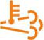

Введение
Руководство по эксплуатации автомобиля GAZel Next
Благодарим Вас за покупку автомобиля «ГАЗель Next»! Надежные, комфортабельные автомобили семейства «ГАЗель Next» предназначены для работы по дорогам с усовершенствованным покрытием в различных климатических условиях. Высокие эксплуатационные качества автомобиля, его надежность и минимальная трудоемкость обслуживания во многом зависят от соблюдения правил эксплуатации и ухода за ним. Поэтому мы рекомендуем, ознакомиться с Руководством по эксплуатации в полном объеме, запомнить и следовать нашим рекомендациям по эксплуатации и обслуживанию автомобиля. В настоящем Руководстве по эксплуатации описана наиболее полная комплектация автомобиля, поэтому отдельные устройства и элементы оборудования, включенные в Руководство, на Вашем автомобиле могут отсутствовать как не предусмотренные для данной модификации или комплектации. Конструкция автомобиля постоянно совершенствуется, поэтому некоторые данные и иллюстрации, содержащиеся в данном издании, могут несколько отличаться от Вашего автомобиля и не могут служить основанием для предъявления каких-либо претензий. Регулярное обслуживание Вашего автомобиля в соответствии с настоящим Руководством и сервисной книжкой обеспечит его надежную эксплуатацию. Счастливого Вам пути!
Описание

Ключи от автомобиля
Ключи от автомобиля
К автомобилю прилагается комплект ключей. В комплект входят два единых ключа 1 для замков двери водителя, боковой сдвижной и задних дверей цельнометаллического фургона, а также замка выключателя приборов и стартера (зажигания). Номер ключей указан на бирке 2.
Отпирание и запирание замков дверей
Отпирание и запирание замков дверей
- Дверь водителя снабжена выключателем замка, позволяющим блокирование/разблокирование замка снаружи автомобиля.
- Отпирание:
- вставьте ключ в скважину выключателя замка и поверните его вправо до упора (положение I).
- верните ключ в исходное положение и выньте его.
- откройте дверь, потянув ручку на себя.
- Запирание:
- закройте дверь и, вставив ключ в скважину выключателя замка, поверните его влево до упора (положение II).
- верните ключ в исходное положение и выньте его.
Для открывания заблокированной двери изнутри, потяните два раза ручку 2 на себя: первый раз – для разблокирования замка (кнопка 1 поднимется), второй – для открывания двери. Механизм блокировки замка двери водителя исключает возможность блокировки замка при открытой двери.
Цельнометаллический кузов имеет также боковую сдвижную дверь с правой стороны и двойную заднюю дверь. Пользование замками боковой сдвижной и правой задней двери аналогично указанному для замка двери водителя, только отпирание замков происходит при повороте ключа влево, а запирание – при повороте ключа вправо. Для открывания боковой сдвижной двери снаружи потяните ручку на себя и сдвиньте дверь назад. Для закрывания боковой сдвижной двери снаружи потяните за ручку по ходу движения автомобиля и сдвиньте дверь. Для открывания боковой сдвижной двери изнутри потяните ручку против хода движения и сдвиньте дверь назад. Этой же ручкой пользуйтесь и при закрывании двери изнутри. Для удобства посадки-высадки пассажиров, на автобусе установлена выдвижная подножка. Подножка выдвигается автоматически в начале открываниябоковой сдвижной двери, убирается после ее закрытия. Для открывания задней правой двери снаружи/изнутри потяните на себя соответственно наружную или внутреннюю ручку правой двери. Для открывания левой двери потяните против часовой стрелки ручку на торце двери и откройте дверь. Закрывать следует сначала левую дверь, затем правую. В вариантном исполнении боковая сдвижная и задняя дверь грузового салона могут быть заблокированы/разблокированы кнопкой на панели приборов. При заблокированных замках боковой сдвижной и задней двери и при включенных приборах (зажигании) индикатор в кнопке горит. Блокировка/разблокировка с кнопки не работает при открытых боковой сдвижной и задней двери.
Задние двери открываются на 270° с фиксацией ограничителями при открывании на 90° (на автобусах ограничители не устанавливаются, задние двери открываются на 180° без фиксации при открывании на 90°). Для фиксации правой или левой задней двери на 90° откройте дверь и убедитесь, что рычаг ограничителя находится в зацеплении со стопором как показано на рисунке.

Для фиксации правой или левой задней двери на 270° откройте дверь на угол меньше 90° и убедитесь, что рычаг ограничителя не находится в зацеплении со стопором (положение А), отведите рычаг ограничителя в направлении стрелки как показано на рисунке и откройте дверь. При необходимости ограничитель можно отключить (не рекомендуется!), зафиксировав рычаг в пружинном фиксаторе (положение В). Для включения ограничителя потяните рычаг на себя и введите его в зацепление со стопором. Фиксация при максимальном открывании двери (~270°) осуществляется автоматически при помощи магнитного фиксатора. Для расфиксации потяните дверь в сторону закрывания (на себя).
Фиксация при максимальном открывании двери (~270°) осуществляется автоматически при помощи магнитного фиксатора. Для расфиксации потяните дверь в сторону закрывания (на себя).
Центральная система запирания дверей
Центральная система запирания дверей
- Центральный замок работает только при наличии электропитания (заряженной батареи).
- Центральный замок позволяет одновременное блокирование (запирание) и разблокирование (отпирание) двери водителя и пассажирских дверей.
- ЗАПИРАНИЕ.
- Снаружи:
- Закройте двери и поверните ключ в замке водительской двери влево до упора.
- Верните ключ в исходное положение и выньте его.
- Изнутри:
- На закрытых дверях нажмите вниз кнопку блокировки на водительской двери
- Кнопки блокировки опустятся на двери водителя и пассажирских дверях.
- ОТПИРАНИЕ.
- Снаружи:
- Поверните ключ в замке водительской двери вправо до упора.
- Верните ключ в исходное положение ивыньте его.
- Изнутри:
- Потяните на себя внутреннюю ручку водительской двери один раз.
- Кнопки блокировки поднимутся на двери водителя и пассажирских дверях, замки указанных дверей будут разблокированы.
- Для открывания двери потяните на себя внутреннюю ручку еще раз.
Сиденья
СИДЕНЬЯ
Сиденье водителя
- Рекомендуем регулировать сиденье водителя следующим образом:
- используя регулировки, установите сиденье так, чтобы, не испытывая дискомфорта, Вы могли полностью нажать любую педаль управления автомобилем;
- наклон спинки установите таким образом, чтобы Вы могли включить пятую передачу не отрывая спины от спинки сиденья.
- В зависимости от комплектации автомобиля сиденье водителя может оснащаться электрообогревом, регулировкой жесткости поясничного подпора спинки сиденья и регулировкой положения подушки в продольном направлении.
- Подлокотник регулируется по углу наклона поворотом колеса, расположенного в нижней передней части подлокотника.
- Сиденье имеет следующие регулировки:
- продольную;
- по высоте передней части сиденья;
- по высоте задней части сиденья;
- по углу наклона спинки;
- жесткости поясничного подпора;
- продольного перемещения подушки.
- Для продольного перемещения сиденья:
- Потяните рукоятку 1 продольной регулировки вверх и выберите желаемое положение сиденья.
- После регулировки убедитесь, что сиденье зафиксировалось.
- Для регулировки высоты передней или задней части сиденья:
- Поднимите вверх соответственно рукоятку 2 или 3 и последовательно установите желаемую высоту передней или задней части сиденья.
- Для регулировки угла наклона спинки сиденья:
- поверните рычаг 4 как показано на рисунке и выберите желаемое положение наклона спинки.
- Для регулировки жесткости поясничного подпора спинки сиденья:
- Поворачивайте рукоятку 5 как показано на рисунке и выберите желаемую жесткость поясничного подпора.
- Для регулировки продольного перемещения подушки:
- Поднимите рукоятку 6 вверх как показано на рисунке, и не отпуская, произведите регулировку, после чего отпустите рукоятку.
- Сиденье водителя установлено на сварное основание, выполняющее дополнительно функцию отсека для мелких вещей.
- Для получения доступа в отсек отклоните спинку сиденья и передвиньте сиденье максимально вперед.
Подголовник сиденья водителя
Для регулировки подголовника нажмите фиксатор 1 и, удерживая его, передвиньте (вверх или вниз) подголовник так, чтобы затылок располагался на уровне его центральной части. Затем отпустите фиксатор и попробуйте передвинуть подголовник, чтобы убедиться, что он надежно закреплен.
Для регулировки подголовника обхватите подголовник руками и передвиньте (вверх или вниз) подголовник так, чтобы затылок располагался напротив его центральной части.
Сиденье пассажиров
- Сиденье пассажиров двухместное, нерегулируемое.
- На основании сиденья пассажиров с правой стороны имеются приварные кронштейны для установки огнетушителя.
- На втором ряду автомобилей с платформой и двухрядной кабиной установлены аналогичные по конструкции сиденья.
- На автомобилях с платформой и двухрядной кабиной огнетушитель устанавливается на приварные кронштейны правого сиденья второго ряда.
Автомобили с цельнометаллическим кузовом и двухрядной кабиной оснащены, а автомобили с платформой и двухрядной кабиной могут быть оснащены трансформируемыми в спальное место сиденьями пассажиров второго ряда. Дополнительно сиденья несут функцию вещевого ящика, образованного наружными декоративными панелями. Для доступа в ящик потяните за ремешок подушки и откиньте подушку вперед до вертикального положения.

Для трансформации сидений в спальное место, при сложенной подушке, потяните за ремешок привода замка спинки и опустите спинку сиденья как показано на рисунке, положив ее на подушку сиденья. В случае установленных трансформируемых сидений пассажиров второго ряда, огнетушитель закреплен на кронштейнах сиденья передних пассажиров.
Сиденья пассажиров в салоне автобуса
Сиденья пассажиров в кабинной части автобусов одноместные нерегулируемые, установленные на единое основание. Левое сиденье имеет в своем составе диагонально-поясной ремень безопасности и подлокотник. В составе правого сиденья ремень безопасности отсутствует. В салоне автобусов, в зависимости от комплектации, может быть установлено либо четырнадцать одноместных нерегулируемых сидений со встроенными двухточечными (поясными) ремнями безопасности, либо двенадцать одноместных нерегулируемых сидений без ремней безопасности. Правое сиденье первого ряда салона, в случае сидений с ремнями безопасности, оснащено поручнем с правой стороны и предназначено для лица приоритетной группы.
Регулировка положения рулевого колеса
Регулировка положения рулевого колеса
Рулевая колонка регулируется по углу наклона. Для регулировки колонки опустите рычаг 1 механизма фиксации рулевой колонки вниз (положение II), установите рулевое колесо в удобное положение и зафиксируйте колонку, подняв рычаг вверх до упора (в исходное положение I). Регулировку положения рулевого колеса производите после регулировки сиденья водителя. Рулевое колесо установите так, чтобы слегка согнутой рукой можно было свободно достать его верхнюю часть.
Ремни безопасности
Ремни безопасности
- Ремни безопасности являются эффективным средством защиты водителя и пассажиров от тяжёлых последствий дорожно-транспортных происшествий.
- Автомобили комплектуются тремя типами ремней:
- трёхточечными (диагонально-поясными) с инерционными катушками,
- двухточечными (поясными) статическими с ручной регулировкой длины ленты
- двухточечными (поясными) с инерционной катушкой.
- Диагонально-поясные ремни, а также двухточечные (поясные) ремни с инерционной катушкой не нуждаются в регулировке.
- В случае поясных статических ремней необходима индивидуальная регулировка длины лямки ремня, при этом поясная лямка должна плотно прилегать к бёдрам. Изменение длины лямки осуществляется регулятором.
Регулировка положения ремня безопасности
Ремни безопасности водителя и переднего правого пассажира оснащены механизмами, позволяющими отрегулировать верхнюю направляющую ремня безопасности по высоте, обеспечивая тем самым удобство пользования ремнем людям различных ростовых групп. Крайние диагонально-поясные ремни безопасности второго ряда сидений указанными механизмами не оснащаются. Для регулировки положения верхней направляющей потяните на себя кнопку 1 и одновременно двигайте ее либо вверх, либо вниз по необходимости.
Пристёгивание ремнём безопасности
- Для пристёгивания ремнём медленно (без рывков) потяните ленту ремня за язычок 1, чтобы её длина по груди и бёдрам была примерно одинаковой, и вставьте его в соответствующий данному сиденью замок 2 до характерного щелчка.
- Верхняя часть ремня должна проходить через середину плеча, и ни в коем случае через шею или под рукой, и должна плотно прилегать к верхней части туловища.
- Поясная часть ремня должна лежать как можно ниже и всегда плотно прилегать к бёдрам. В противном случае следует отпустить ремень и потянуть его.
- Для освобождения ремней нажмите на красную кнопку 3 соответствующего замка. При этом язычок будет вытолкнут пружиной из своего гнезда. Отведите ленту ремня за язычок рукой назад, чтобы механизму было легче её смотать.
- Ремнями безопасности должны пристёгиваться и беременные женщины. Необходимо помнить, что лента ремня должна располагаться таким образом, чтобы избежать любого давления на живот. Поясная часть ремня должна располагаться ниже живота.
Зеркала заднего вида
Наружные зеркала
- Для регулировки наружных зеркал с электроприводом при включенных приборах и стартере (зажигании) поворотом рукоятки 1 пульта управления выберите правое R или левое L зеркало. Перемещением рукоятки вправо или влево осуществляется регулировка по горизонтали, а вверх или вниз – регулировка по вертикали. При включенных габаритных огнях пульт управления подсвечивается.
- Регулировка наружных зеркал без электропривода осуществляется вручную, воздействием на само зеркало.
- При запотевании/обмерзании наружных зеркал включите их обогрев выключателем, установленным в блоке выключателей на панели приборов (для автомобилей с платформой и автофургонов) или справа от рулевого колеса (для автобусов). Обогрев зеркал выключается повторным нажатием на выключатель.
- Регулировку положения зеркал заднего вида производите после регулировки сиденья водителя.
- Зеркала имеют механизмы складывания, и в случае наезда на препятствие позволяют им отклоняться в сторону удара, тем самым, исключая повреждение зеркал.
Внутреннее зеркало
Внутреннее зеркало заднего вида регулируйте поворотом вокруг шарнира его крепления.
Панель приборов и органы управления
Панель приборов и органы управления
1. Блок управления электроприводом стеклоподъемников и наружных зеркал
2. Ручка открывания двери изнутри
3. Боковые дефлекторы вентиляции
4. Модуль управления светом
5. Рычаг подрулевого переключателя указателей поворота и света фар
6. Комбинация приборов
7. Рулевое колесо
8. Выключатель аварийной сигнализации
9. Кнопка звукового сигнала
10. Выключатель приборов и стартера (зажигания)
11. Рычаг подрулевого переключателя стеклоочистителя и стеклоомывателя
12. Центральные дефлекторы вентиляции
13. CD-MP3 ресивер
14. Выключатели на панели приборов
15. Пульт управления отоплением, вентиляцией и кондиционированием воздуха
16. Карман для документов
17. Верхний вещевой ящик
18. Нижний вещевой ящик
19. Розетка
20. Ящик для мелких вещей/пепельница
21. Прикуриватель или блок системы «ЭРА-ГЛОНАСС»
22. Рычаг переключения передач
23. Выключатель ФВУ
24. Рычаг стояночного тормоза
25. Ручка управления дополнительным отопителем
26. Газ-педаль
27. Выключатель обогрева наружных зеркал заднего вида (для автобусов)
28. Педаль рабочих тормозов
29. Модуль управления предпусковым подогревателем
30. Педаль сцепления
31. Рычаг механизма фиксации рулевой колонки
32. Крышка блока предохранителей
33. Пульт управления независимым отопителем
34. Ручка открывания замка капота
Комбинация приборов

Комбинация приборов
1. Тахометр.
Указывает частоту вращения коленчатого вала двигателя в об/мин.
2. Указатель температуры охлаждающей жидкости двигателя.
При достижении стрелкой красной зоны шкалы и загорании сигнализатора аварийно высокой температуры охлаждающей жидкости, необходимо остановить двигатель и устранить причину перегрева.
3. Кнопка «Режим»/управления маршрутным компьютером.
- Для «самотестирования» комбинации приборов нажмите кнопку «Режим» и, удерживая ее, включите приборы (зажигание) − положение ключа I). При этом включаются тестируемые сигнализаторы, все сегменты многофункционального дисплея, стрелочные индикаторы проходят путь от минимума до максимума.
- Режим «самотестирования» прерывается:
- самостоятельно после движения стрелок приборов от начальной отметки шкалы до максимальной;
- при появлении сигнала оборотов коленчатого вала двигателя;
- при выключении приборов (зажигания)
- После окончания режима «самотестирования» комбинация приборов выходит в рабочий режим.
- Для управления маршрутным компьютером (выбор меню по кругу) поверните кнопку по часовой стрелке (МК-up) или против часовой стрелки (МК-down).
- Для сброса (обнуления) отдельных показаний маршрутного компьютера нажмите кнопку во время индикации конкретного показания.
4. Многофункциональный дисплей.
Режимы работы смотрите на этой странице ниже.
5. Кнопка установки на нуль показаний суточного пробега/перевода часов и минут.
- Для установки на нуль показаний суточного пробега нажмите кнопку и удерживайте ее нажатой не менее 3 секунд.
- Для перевода часов и минут поверните кнопку: по часовой стрелке – изменение показаний часов, против часовой стрелки – изменение показаний минут.
6. Указатель уровня топлива.
При остатке топлива менее 8 л стрелка достигает красной зоны шкалы и загорается сигнализатор минимального резерва топлива в баке.
7. Спидометр.
Указывает скорость движения автомобиля в км/ч.
- Для исключения последствий сбоев в работе комбинации приборов:
- 1. Выключите приборы (зажигание).
- 2. При отключенной аккумуляторной батарее восстановите соединение аккумуляторной батареи с бортовой сетью автомобиля, при подключенной аккумуляторной батарее – отключите и через несколько секунд подключите аккумуляторную батарею к бортовой сети автомобиля.
- 3. Нажмите кнопку «Режим» и, удерживая ее, включите приборы (зажигание). При этом стрелочные индикаторы вернутся в исходное положение.
Многофункциональный дисплей
Показания дисплея:

Режим показаний текущего времени, ч:мин (от 00:00 до 23:59)

Режим показаний напряжения бортовой электрической сети, V (от 6.0 до 18.0)

Режим показаний среднего расхода топлива, л/100 км (от 0.0 до 19.9)

Режим показаний общего расхода топлива, л (от 0 до 9999). Обнуляется кнопкой «Режим»

Режим показаний средней скорости, км/ч (от 0 до 250). Обнуляется кнопкой «Режим»

Режим показаний мгновенного расхода топлива, л/ч (от 0.0 до 19.9)

Режим показаний пробега до заправки, км (от 30 до 999)

Режим показаний времени в пути, ч, мин (от 00:00 до 99:59). Обнуляется кнопкой «Режим»

Режим показаний счетчика суточного пробега, км (от 0.0 до 9999.9)

Режим показаний счетчика пройденного пути, км (от 0 до 999999)
Сигнализаторы комбинации приборов
1. Сигнализатор (оранжевый) засорения сажевого фильтра.
Информирует водителя о состоянии сажевого фильтра.
2.Сигнализатор (оранжевый) высокой температуры системы выпуска.
Информирует водителя о засоренности сажевого фильтра.
3. Сигнализатор (оранжевый) низкого уровня охлаждающей жидкости.
При загорании сигнализатора необходимо устранить причину утечки охлаждающей жидкости и довести уровень в расширительном бачке системы охлаждения двигателя до нормы.
4. Сигнализатор (красный) критической неисправности двигателя.
Сигнализатор (красный) критической неисправности двигателя.
Кратковременно загорается при включении приборов(зажигания). При отсутствии неисправностей загорается при включении приборов (зажигания) и непрерывно горит 2-5 секунд, затем гаснет. При непрерывном горении информирует водителя о наличии критической неисправности (перегрев двигателя, падение давления масла, отказ газ-педали, критическая неисправность электронного блока) при которой необходимо немедленно прекратить движение и остановить двигатель.
5. Сигнализатор (оранжевый) MIL.
Сигнализатор (оранжевый) MIL.
Кратковременно загорается при включении приборов (зажигания). Информирует водителя о неисправностях, фиксируемых бортовой диагностической системой, имеющих отношение к выбросам отработавших газов и твердых частиц. При непрерывном горении сигнализатора необходимо провести диагностику системы управления двигателем на предприятии технического обслуживания. После устранения неисправности сигнализатор продолжает гореть в течение четырех циклов пуска двигателя, затем гаснет.
6.  Сигнализатор (оранжевый) «Внимание» системы управления двигателем.
Сигнализатор (оранжевый) «Внимание» системы управления двигателем.
7. Сигнализатор (зеленый) включения левых указателей поворота.
8. Сигнализатор (белый) включения дневных ходовых огней.
9.  Сигнализатор (красный) аварийно высокой температуры охлаждающей жидкости.
Сигнализатор (красный) аварийно высокой температуры охлаждающей жидкости.
Кратковременно загорается при включении приборов (зажигания). При непрерывном горении сигнализатора необходимо немедленно остановить двигатель (в соответствии с подразделом «Остановка двигателя»), определить и устранить причину перегрева.
10. Сигнализатор (зеленый) включения габаритных огней.
11. Сигнализатор (красный) «STOP».
Загорается одновременно с одним из аварийных сигнализаторов красного цвета. При загорании указанных сигнализаторов дальнейшая эксплуатация автомобиля не допускается до устранения неисправности. Горение сигнализатора в мигающем режиме и дублирование периодическим звуковым сигналом указывает на требование остановки пассажирами (нажатие кнопки в салоне).
12.Сигнализатор (синий) включения дальнего света фар.
13. Сигнализатор (оранжевый) минимального резерва топлива в баке.
Загорается при положении поплавка уровня топлива в районе 8 литров.
14.Сигнализатор (зеленый) включения ближнего света фар.
15.Сигнализатор (зеленый) включения правых указателей поворота.
16. Сигнализатор (оранжевый) включения блокировки межосевого дифференциала или резервный.
17. Сигнализатор (оранжевый) включения блокировки дифференциала переднего моста или резервный.
18. Сигнализатор (красный) непристегнутых ремней безопасности или резервный.
19. Сигнализатор (красный) неисправности подушки или ремня безопасности или резервный.
20. Сигнализатор (оранжевый) отключения подушки безопасности пассажира или резервный.
21. Сигнализатор (оранжевый) отключения системы стабилизации курсовой устойчивости или резервный.
22.Сигнализатор (красный) неисправности электронного регулятора тормозных сил или резервный.
Загорается при включении приборов (зажигания) и гаснет через несколько секунд. Непрерывное горение сигнализатора или его загорание в движении указывает на неисправность регулятора тормозных сил. Автомобиль должен быть проверен на предприятии технического обслуживания. Эксплуатация автомобиля до устранения данной неисправности не допускается.
23. Сигнализатор (оранжевый) неисправности системы стабилизации курсовой устойчивости или резервный.
Загорается при включении приборов (зажигания) и гаснет через несколько секунд. Непрерывное горение сигнализатора или его загорание в движении указывает на неисправность системы курсовой устойчивости. Автомобиль должен быть проверен на предприятии технического обслуживания.
24.Сигнализатор (зеленый) включения пониженной передачи или резервный.
25.Сигнализатор (оранжевый) неисправности антиблокировочной системы тормозов или резервный.
Загорается при включении приборов (зажигания) и гаснет через несколько секунд. Длительное горение сигнализатора или его загорание в движении указывает на неисправность антиблокировочной системы тормозов. При этом рабочая тормозная система сохраняет работоспособность. Автомобиль должен быть проверен на предприятии технического обслуживания.
26. Сигнализатор (красный) незакрытых дверей и/или выдвинутой подножки.
Горение сигнализатора в мигающем режиме и дублирование периодическим звуковым сигналом при движении указывает на незакрытые передние и/или боковые двери и/или выдвинутую подножку. Горение сигнализатора в постоянном режиме и дублирование постоянным звуковым сигналом указывает на незакрытые задние двери автобуса.
27.  Сигнализатор (оранжевый) включения блокировки дифференциала заднего моста или резервный.
Сигнализатор (оранжевый) включения блокировки дифференциала заднего моста или резервный.
28. Сигнализатор (оранжевый) включения подогревателя воздуха (для дизельного двигателя).
Загорается при включении приборов. Пускать двигатель стартером только после того как сигнализатор погаснет.
29. Сигнализатор (оранжевый) наличия воды в топливе (для дизельного двигателя).
Кратковременно загорается при включении приборов. Непрерывное горение сигнализатора указывает на наличие воды в топливном фильтре. Необходимо немедленно остановить двигатель, слить воду из топливного фильтра или обратиться на предприятие технического обслуживания.
30. Сигнализатор (красный) разряда аккумуляторной батареи.
Загорается при включении приборов (зажигания) и гаснет после пуска двигателя. Загорание сигнализатора при работающем двигателе указывает на слабое натяжение или обрыв ремня привода навесных агрегатов двигателя или на неисправность в цепи заряда батареи.
31. Сигнализатор (красный) включения стояночного тормоза.
Загорается мигающим светом при включении приборов (зажигания), если автомобиль заторможен стояночным тормозом (дублируется кратковременным звуковым сигналом при движении автомобиля).
32.Сигнализатор (красный) аварийно низкого давления масла.
Загорается при включении приборов (зажигания) и гаснет после пуска двигателя (дублируется кратковременным звуковым сигналом при движении автомобиля). Загорание сигнализатора при работающем двигателе указывает на низкое давление масла в системе смазки двигателя, при этом необходимо немедленно остановить двигатель и проверить уровень масла в картере, при необходимости, долить. Если уровень масла в пределах нормы, следует обратиться на предприятие технического обслуживания.
33. Сигнализатор (красный) аварийно низкого уровня тормозной жидкости в бачке главного цилиндра тормозов.
Загорание сигнализатора свидетельствует о неисправности тормозной системы. Автомобиль должен быть немедленно проверен на предприятии технического обслуживания. Эксплуатация автомобиля до устранения данной неисправности не допускается.
34.Сигнализатор (оранжевый) включения заднего противотуманного света.
Выключатель зажигания
Выключатель приборов и стартера (зажигания)
- Положения выключателя:
- 0 – все выключено, ключ не вынимается, противоугонное устройство не включено;
- I – включены приборы (зажигание), ключ не вынимается;
- II – включены приборы (зажигание) и стартер, ключ не вынимается;
- III – приборы (зажигание) выключены, при вынутом ключе включено противоугонное устройство. Для блокировки рулевого управления при вынутом ключе поверните рулевое колесо в любую сторону до щелчка.
- Для выключения противоугонного устройства вставьте ключ в выключатель приборов и стартера (зажигания) и, слегка покачивая рулевое колесо вправо-влево, поверните ключ в положение 0.
- В зависимости от типа выключателя приборов и стартера (зажигания) на части автомобилей работа магнитолы, стеклоподъемников и розетки возможна только при вставленном ключе.
Подрулевые переключатели
Подрулевые переключатели
Рычаг переключателя указателей поворота и света фар
- Указатели поворота работают только при включенных приборах и стартере (зажигании). Для включения указателей поворота: правых – рычаг вверх, левых – рычаг вниз.
- Положения рычага:
- 1. Положение кратковременного включения указателей поворoта. Переместите рычаг вверх или вниз на величину собственного cвободного хода (до ощущения лёгкого упругого сопротивления рычага). Сигнализация будет работать пока вы держите рычаг.
- 2. Фиксированные положения указателей поворота. По завершении поворота рычаг автоматически вернётся в исходное положение. Мигание сигнализатора на комбинации приборов с удвоенной частотой указывает на неисправность лампы указателя поворота.
- 3. Ближний свет. Среднее фиксированное положение рычага, если ручка центрального переключателя света находится в положении II и выключатель приборов и стартера (зажигания) находится в положении I.
- 4. Дальний свет. Переместите рычаг от рулевого колеса в фиксированное положение.
- 5. Кратковременная сигнализация дальним светом фар. Потяните рычаг к рулевому колесу. После отпускания рычаг вернётся в среднее положение.
- 6. Кнопка включения функции «Круиз-контроль». При однократном нажатии на кнопку вдоль оси включается функция «Круиз-контроль». При повторном нажатии кнопки, скорость автомобиля незначительно уменьшается с каждым ее нажатием, до достижения автомобилем скорости примерно 50 км/час.
- Функция «Круиз-контроль» начинает работать при скорости автомобиля более 48 км/ч. Для включения функции необходимо кратковременно нажать кнопку «Круиз-контроль» и отпустить газ-педаль. При этом система запоминает текущую скорость автомобиля и поддерживает ее до нажатия любой из педалей управления автомобилем (газ-педали, тормоза, сцепления). При нажатии любой из педалей управления автомобилем, функция «Круиз-контроль» выключается.
Переключатель стеклоочистителя и стеклоомывателя с регулятором паузы
- Стеклоочиститель и стеклоомыватель работают только при включенных приборах и стартере (зажигании).
- В морозную погоду, прежде чем включить стеклоочиститель, убедитесь, что щётки не подмёрзли к ветровому стеклу.
- Положения рычага (вариант 1):
- 1. Очистка ветрового стекла одним рабочим ходом щёток. Переместите рычаг вверх только на величину его свободного хода (до ощущения лёгкого упругого сопротивления рычага). Стеклоочиститель будет работать пока вы держите рычаг. Рекомендуется пользоваться при слабом дожде или забрызгивании ветрового стекла встречным автомобилем.
- 2. Малая скорость стеклоочистителя.
- 3. Большая скорость стеклоочистителя.
- 4. Прерывистая работа стеклоочистителя. Щётки стеклоочистителя совершают один рабочий ход в интервале от 2с до 12с в зависимости от положения регулятора паузы 1, которое выбирается поворотом регулятора в направлении стрелки, как показано на рисунке.
- 5. Включение стеклоомывателя. Включается перемещением рычага вперёд, вдоль рулевой колонки из любого положения, положение не фиксируемое.
- Положения рычага (вариант 2):
- 1. Прерывистая работа стеклоочистителя. Щётки стеклоочистителя совершают один рабочий ход в интервале от 2с до 12с в зависимости от положения регулятора паузы 1, которое выбирается поворотом регулятора в направлении стрелки, как показано на рисунке.
- 2. Малая скорость стеклоочистителя.
- 3. Большая скорость стеклоочистителя.
- 4. Очистка ветрового стекла одним рабочим ходом щёток. Переместите рычаг вниз только на величину его свободного хода (до ощущения лёгкого упругого сопротивления рычага). Стеклоочиститель будет работать пока вы держите рычаг. Рекомендуется пользоваться при слабом дожде или забрызгивании ветрового стекла встречным автомобилем.
- 5. Включение стеклоомывателя. Включается перемещением рычага вперёд, вдоль рулевой колонки из любого положения, положение не фиксируемое.
Модуль управления светом
Модуль управления светом
Центральный переключатель света
- Переключатель имеет три фиксированных положения:
- 0 – наружное освещение выключено;
- I – включены габаритные огни, освещение комбинации приборов, заднего номерного знака и некоторых органов управления электрооборудованием;
- II – дополнительно включены ближний или дальний свет, в зависимости от положения (соответственно 3 или 4) рычага подрулевого переключателя указателей поворота и света фар.
- Дневные ходовые огни включаются автоматически при включении приборов и стартера (зажигания), если центральный переключатель света находится в положении 0. При переводе переключателя в положение I или II дневные ходовые огни выключаются.
- На автомобилях с цельнометаллическим кузовом дневные ходовые огни выключаются при включении стояночного тормоза.
Регулятор освещенности приборов
Поворотом регулятора вверх или вниз выбирается яркость освещения приборов, выключателей, пульта управления отоплением.
Регулятор корректора фар
- Позволяет при включенном ближнем свете фар корректировать угол наклона пучка света в зависимости от загрузки автомобиля:
- 0 – только водитель;
- 1 – полностью груженый автомобиль;
- 2 и 3 – не задействованы.
Выключатель передних противотуманных фар
Включение передних противотуманных фар происходит при нажатии на клавишу выключателя при включенных габаритных огнях. При этом в клавише загорается контрольный индикатор включенного состояния передних противотуманных фар.
- Выключение происходит при:
- повторном нажатии на клавишу выключателя;
- переключении ключа в выключателе приборов и стартера (зажигания) в положение «0».
- переводе центрального переключателя света в положение «0».
Выключатель задних противотуманных фонарей
- Включение задних противотуманных фонарей происходит при нажатии на клавишу выключателя, если включены ближний, дальний свет фар или передние противотуманные фары. При этом в клавише загорается контрольный индикатор, а на комбинации приборов сигнализатор включенного состояния задних противотуманных фонарей.
- Выключение задних противотуманных фонарей происходит при:
- повторном нажатии на клавишу выключателя;
- переключении ключа в выключателе приборов и стартера (зажигания) в положение «0»;
- выключении ближнего/дальнего света фар и передних противотуманных фар.
Выключатели на панели приборов
Выключатели на панели приборов
Выключатели имеют контрольные сигнализаторы включенного состояния.
1. Выключатель обогрева наружных зеркал заднего вида (для автомобилей с платформой и автофургонов).
илиВыключатель открывания/закрывания служебной двери (для автобусов).
2. Выключатель догревателя охлаждающей жидкости.
3. Выключатель обогрева сиденья водителя.
4.  Выключатель регенерации сажевого фильтра (кнопка без фиксации).
Выключатель регенерации сажевого фильтра (кнопка без фиксации).
5. Выключатель блокировки/разблокировки дверей грузового салона автофургонов.
илиВыключатель плафонов салона автобусов.
6. Выключатель блокировки дифференциала заднего моста.
Выключатель аварийной сигнализации
Выключатель аварийной сигнализации
- Выключатель 1 расположен в окне верхнего кожуха рулевой колонки.
- При нажатии на кнопку выключателя одновременно горят в мигающем режиме все указатели поворота.
- Аварийную световую сигнализацию необходимо включать при вынужденной остановке автомобиля на проезжей части дороги и для оповещения других участников дорожного движения об опасности, создаваемой вашим автомобилем.
- Аварийная сигнализация работает как при включенных, так и при выключенных приборах и стартере (зажигании).
Стеклоподъемники

Стеклоподъемники
- Управление электрическими стеклоподъемниками осуществляется с помощью переключателей, расположенных на поручне подлокотников дверей. Расположение переключателей на двери водителя (левый/правый) соответствует расположению дверей автомобиля.
- Стеклоподъемники работают только при включенных приборах (зажигании).
- Для подъема или опускания стекла нажмите соответственно вверх или вниз переключатель и удерживайте его, пока стекло не займет желаемое положение.
- При включенных приборах символы органов управления стеклоподъемниками подсвечиваются.
Прикуриватель
Прикуриватель
Для пользования прикуривателем, утопите его до фиксированного положения. После нагрева спирали он вернется в исходное положение готовым к применению.
Пепельница
Пепельница
Пепельница расположена в кармане для мелких вещей на панели приборов. Чтобы воспользоваться пепельницей откройте крышку 1 кармана, а затем крышку 2 пепельницы как показано на рисунке. Для очистки контейнера пепельницы потяните его вверх за наружный край корпуса пепельницы.
Розетки
Розетки
- Чтобы воспользоваться розеткой, откройте крышку, закрывающую гнездо розетки, как показано на рисунке.
- Розетка предназначена для подключения внешних потребителей (вилка переносной лампы, зарядное устройство и др.).
- Длительное использование электрических устройств при выключенном двигателе может стать причиной разряда аккумуляторной батареи и сделать невозможным последующий пуск двигателя.
- На автомобилях с двумя рядами сидений устанавливается дополнительная розетка на обивке левой средней стойки боковины.
- В пассажирском салоне автобусов могут устанавливаться четыре розетки: две USB-розетки 5В на левой боковине и две розетки 12В на правой боковине (перед сиденьем у сдвижной двери и за задним сиденьем).
Вещевые ящики
Вещевые ящики
Верхний вещевой ящик
- Вещевой ящик открывается рукояткой, как показано стрелкой.
- На отдельных комплектациях автомобиля, крышка вещевого ящика может не устанавливаться.
Нижний вещевой ящик
Вещевой ящик открывается рукояткой, как показано стрелкой.
Карман для документов
- Крышка кармана для документов открывается рукояткой, как показано стрелкой.
- При захлопывании крышки не давите на рукоятку.
Потолочная консоль
В потолочную консоль имеется возможность установить радиооборудование 1 DIN или тахограф.
Полка для багажа
На автомобилях с цельнометаллическим кузовом над водителем предусмотрена полка для багажа.
Ниша для перевозки длинномеров
- На автомобилях с цельнометаллическим кузовом и однорядной кабиной в перегородке грузового отсека имеется люк для перевозки длинномеров, закрытый крышкой.
- Для открывания люка поверните фиксаторы крышки люка из положения I в положение II и снимите крышку.
- В нижней части крышки люка имеются зацепы, с помощью которых крышка держится в отверстиях панели перегородки.
- Отверстия:
- А – для открытого положения люка,
- В – для закрытого.
Карманы и емкости для мелких вещей
Для размещения мелких вещей в кабине автомобиля предусмотрены карманы и емкости на панели приборов и в обивке дверей.
Отопление, вентиляция и кондиционирование воздуха
Отопление, вентиляция и кондиционирование воздуха
Дефлекторы вентиляции салона
- А − Боковые дефлекторы закрыты.
- В − Центральные дефлекторы открыты.
- 1 – Открывание.
- 2 – Закрывание.
- 3 – Регулировка направления воздушных потоков.
Пульт управления отоплением, вентиляцией и кондиционированием воздуха
1. Ручка регулятора температуры воздуха.
2. Ручка регулятора распределения потоков воздуха.
Воздух поступает в ноги водителя и пассажиров
Воздух поступает на обдув стекол и в ноги водителя и пассажиров
Воздух поступает на обдув ветрового стекла и стекол дверей
Воздух поступает на обдув стекол, в салон и в ноги водителя и пассажиров
Воздух поступает в салон через дефлекторы вентиляции
3. Ручка регулятора скорости вращения вентилятора отопителя.
4. Кнопка включения/выключения кондиционера.
5. Кнопка включения/выключения режима рециркуляции воздуха.
Устранение запотевания стекол
- Для быстрого устранения запотевания ветрового стекла и стекол дверей, установите ручки 1 и 3 на пульте управления в крайнее правое положение, а ручку 2 в положение, показанные на рисунке.
- При включении кондиционера устранение запотевания стекол происходит интенсивнее.
Отопление
- Для быстрого обогрева салона установите ручки 1 и 3 на пульте управления в крайнее правое положение, а ручку 2 в положение,показанные на рисунке.
- Для достижения максимальной эффективности отопления, а также чтобы изолировать салон от неприятных запахов и дыма включите режим рециркуляции, нажав на кнопку 5. Режим рециркуляции автоматически выключается через 10 минут. Принудительное выключение режима рециркуляции осуществляется повторным нажатием на кнопку 5. После остановки и последующего пуска двигателя заслонка рециркуляции автоматически переводится в режим забора наружного воздуха.
- Не пользуйтесь режимом рециркуляции длительное время, так как в этом случае прекращается поступление свежего воздуха в салон автомобиля, что может привести к ухудшению самочувствия, а также запотеванию стекол.
- Когда салон будет достаточно прогрет, регулятор скорости вращения вентилятора 3 рекомендуем поставить в среднее положение, регулятор распределения потоков воздуха в положение соответствующее комфортному распределению воздуха и регулировать температуру перемещением ручки регулятора температуры 1 в пределах красной зоны.
Вентиляция
- Для максимального поступления в салон свежего воздуха, установите ручку 1 на пульте управления в крайнее левое положение, ручку 3 в крайнее правое положение, а ручку 2 в положение ,показанные на рисунке.
- Откройте дефлекторы вентиляции.
- Отрегулируйте направление потоков воздуха дефлекторами вентиляции.
- Для исключения проникновения в салон неприятных запахов, выхлопных газов впереди идущих автомобилей, при езде в туннеле и т.п., рекомендуем включить режим рециркуляции кнопкой 5.
Кондиционирование
Для быстрого охлаждения салона включите кондиционер кнопкой 4 и установите ручку 1 на пульте управления в крайнее левое положение, ручку 3 в крайнее правое положение, а ручку 2 в положение,показанные на рисунке.
- Для достижения максимальной эффективности кондиционирования, а также чтобы изолировать салон от неприятных запахов и дыма включите режим рециркуляции, нажав на кнопку 5. Режим рециркуляции автоматически выключается через 10 минут. Принудительное выключение режима рециркуляции осуществляется повторным нажатием на кнопку 5. После остановки и последующего пуска двигателя заслонка рециркуляции автоматически переводится в режим забора наружного воздуха.
- Не пользуйтесь режимом рециркуляции длительное время, так как в этом случае прекращается поступление свежего воздуха в салон автомобиля, что может привести к ухудшению самочувствия, а также запотеванию стекол.
- Когда салон будет достаточно охлажден, установите регулятор скорости вращения вентилятора 3 в среднее положение, регулятор распределения потоков воздуха в положение соответствующее комфортному распределению воздуха и регулируйте температуру перемещением ручки регулятора температуры 1 в пределах синей зоны.
- После длительной стоянки закрытого автомобиля в солнечную жаркую погоду, рекомендуется на несколько минут открыть двери или окна, проветрить салон, и только затем включить кондиционер.
- Выключение кондиционера осуществляется повторным нажатием на кнопку 4.
- Для обеспечения нормальной работы кондиционера рекомендуется его включать не реже одного раза в месяц продолжительностью 5-10 минут. Это необходимо для смазывания узлов кондиционера маслом, содержащимся в растворенном виде в хладагенте. Данную процедуру необходимо производить и в зимнее время года, но при условии положительной температуры окружающей среды.
Догреватель охлаждающей жидкости
- Для достижения комфортных условий в салоне автомобиля и для стабилизации температурного режима работы дизельного двигателя в зимнее время, на автомобиль установлен догреватель охлаждающей жидкости.
- Догреватель установлен в подкапотном пространстве перед аккумуляторной батареей.
- Догреватель включается кнопкой 1 при работающем двигателе и включенном отопителе. Далее догреватель работает в автоматическом режиме, повышая температуру теплоносителя, поступающего в систему отопления до 80-85°С, тем самым повышая эффективность ее работы в зимнее время.
- Догреватель рекомендуется включать при температуре наружного воздуха ниже плюс 5°С.
Дополнительный отопитель
- Для создания комфортных условий в салоне автомобилей с двумя рядами сидений и автобусов предусмотрена установка дополнительного отопителя салона.
- Отопитель устанавливается под передним пассажирским сиденьем. Распределительная решетка отопителя направлена в сторону второго ряда сидений.
- Отопитель работает в режиме использования внутреннего воздуха. Неоднократное прохождение внутреннего воздуха через радиатор дополнительного отопителя обеспечивает высокую интенсивность прогрева салона.
Управление дополнительным отопителем
- Управление дополнительным отопителем осуществляется ручкой, расположенной на панели приборов, с помощью которой регулируется скорость работы вентилятора (от 1 до 3).
Независимый отопитель
- Для создания комфортных условий в салоне автобуса предусмотрена установка независимого отопителя салона.
- Независимый отопитель устанавливается под задним рядом пассажирских сидений. Для отопления салона используется внутренний воздух. Неоднократное прохождение внутреннего воздуха через теплообменник независимого отопителя обеспечивает высокую интенсивность прогрева салона.
- Воздуховод независимого отопителя направляет нагретый воздух в салон вдоль левого борта автобуса.
Управление независимым отопителем
Управление независимым отопителем осуществляется пультом, расположенными на панели приборов.
- Необходимо включать независимый отопитель в том числе и в теплое время года примерно раз в месяц на 10 минут. Перед началом постоянной эксплуатации в холодное время года выполните пробный запуск отопителя. Отверстия подачи воздуха в камеру сгорания и отвода выхлопных газов после длительного простоя необходимо проверить, при необходимости − очистить.
- Для автобуса с дизельным двигателем топливные магистрали и дозирующий насос после заправки зимнего дизельного топлива необходимо заполнить новым топливом путем эксплуатации отопительного прибора в течение 15 минут!
- Остальные требования изложены в руководстве по эксплуатации на независимый отопитель, прикладываемом к автомобилю.
Фильтро-вентиляционная установка (ФВУ)
- Для дополнительной вентиляции пассажирского салона автобуса, в задней части крыши установлена ФВУ, работающая в режиме приточной и вытяжной вентиляции.
- Включение/выключение ФВУ осуществляется выключателем 1.
- Устройство и особенности эксплуатации ФВУ, ее возможные неисправности, технические характеристики и гарантийные обязательства приведены в инструкции (руководстве), прикладываемом к автомобилю.
Внутреннее освещение
Внутреннее освещение
Плафон внутреннего освещения кабины
- Плафон внутреннего освещения кабины расположен на обивке крыши в передней части. Плафон имеет две кнопки и общую секцию освещения кабины.
- Для включения внутреннего освещения кабины нажмите кнопку включения плафона со стороны водителя.
- Для выключения освещения повторно нажмите кнопку плафона.
- При нажатии кнопки включения плафона со стороны пассажиров, внутреннее освещение кабины, а также плафон освещения подножки на автомобилях с двухрядной кабиной включаются/выключаются «от открытой двери» следующим образом:
- при открывании двери водителя и/или пассажиров освещение кабины и плафон освещения подножки включаются и остаются включенными 10 минут после чего, плафоны выключатся принудительно, во избежание разряда аккумуляторной батареи;
- при закрывании дверей водителя и пассажиров освещение кабины и плафон освещения подножки плавно выключатся через 10секунд;
- при включении выключателя приборов и стартера (зажигания) в положение I при включенном плафоне, освещение кабины и плафон освещения подножки плавно выключатся через 2 секунды без 10 секундной задержки.
- При закрытых дверях, плафон внутреннего освещения не управляется кнопкой со стороны пассажиров.
Плафон внутреннего освещения второго ряда сидений на автомобилях с платформой и двухрядной кабиной
- На автомобилях с платформой и двухрядной кабиной плафон внутреннего освещения второго ряда сидений расположен на обивке крыши в средней части.
- Плафон имеет две кнопки и две секции освещения второго ряда сидений.
- Для включения внутреннего освещения второго ряда сидений с правой и/или левой стороны нажмите соответствующую кнопку включения плафона.
- Для выключения освещения повторно нажмите кнопку плафона.
Плафон внутреннего освещения второго ряда сидений с цельнометаллическим кузовом
- На автомобилях с цельнометаллическим кузовом и двухрядной кабиной плафоны внутреннего освещения второго ряда сидений расположены в накладке обивки крыши.
- Плафон имеет кнопку включения/выключения.
- Для включения внутреннего освещения второго ряда сидений с правой и/или левой стороны нажмите кнопку соответствующего плафона.
- Для выключения освещения повторно нажмите кнопку плафона.
Освещение внутреннего пространства над полкой для багажа
Для освещения внутреннего пространства над полкой для багажа в автомобилях с двухрядной кабиной предусмотрен плафон, включение/выключение которого осуществляется кнопкой. Освещение пространства над полкой в автомобилях с однорядной кабиной осуществляется плафоном, расположенным около боковой сдвижной двери.
Освещение грузового салона
- На автомобилях с цельнометаллическим кузовом освещение грузового салона осуществляется:
- на трехместных автомобилях двумя плафонами освещения, которые расположены на поперечинах усилителя крыши около боковой сдвижной и задних дверей;
- на семиместных автомобилях одним плафоном освещения, который расположен на поперечине усилителя крыши около задних дверей.
- Включение/выключение плафона/плафонов осуществляется нажатием кнопки на соответствующем плафоне (плафоны работают только при включенных габаритных огнях).
- На автомобилях с опцией блокировки/разблокировки дверей грузового отсека включение/выключение плафона/плафонов осуществляется автоматически при открывании/закрывании двери/дверей. При открытой боковой сдвижной и/или задней двери плафон/плафоны остаются включенными 30 минут после чего, выключатся принудительно, во избежание разряда аккумуляторной батареи. При закрывании дверей грузового салона плафон/плафоны выключатся через 1 минуту, во избежание разряда аккумуляторной батареи.
- При необходимости возможно принудительно включить/выключить любой плафон в грузовом отсеке нажав кнопку включения/выключения на необходимом плафоне.
Освещение пассажирского салона автобуса
- На автобусах освещение пассажирского салона осуществляется десятью плафонами, которые расположены на обивке крыши с правой и левой стороны салона.
- Для включения плафонов нажмите соответствующую кнопку, расположенную в центральной части панели приборов.
- Для выключения плафонов повторно нажмите эту кнопку.
- При открывании боковой сдвижной двери автофургонов с двумя рядами сидений и автобусов подножка освещается светодиодным плафоном.
Аварийно-вентиляционный люк
Аварийно-вентиляционный люк
- На крыше автобуса установлен аварийно-вентиляционный люк, предназначенный для приточно-вытяжной вентиляции салона при эксплуатации и запасного выхода в аварийной ситуации.
- Чтобы приоткрыть люк для вентиляции салона надавите вверх на передние и/или задние ручки 1 крышки люка. Механизмы люка имеют два положения открытия – промежуточное и полное.
- Для закрывания люка потяните вниз за ручки крышки.
- Для аварийного выхода пассажиров через проем люка, согласно инструкции на крышке, выдерните красные ручки 2, закрепленные на облицовке люка изнутри салона или ручки 3, закрепленные на рамке люка снаружи, вытолкните наружу крышку люка.
Аудиооборудование
Аудиооборудование
- В зависимости от комплектации автомобиль может оснащаться аудиооборудованием в следующем составе:
- Головное устройство 1DIN или 2DIN, встроенное в панель приборов. Руководство по эксплуатации головного устройства 1DIN или 2DIN прикладывается к автомобилю.
- – USB разъем головного устройства 1DIN расположен в кармане для документов,
- – USB разъем головного устройства 2DIN – во вставке панели приборов центральной.
- Дублирующие кнопки управления головным устройством 1DIN или 2DIN на рулевом колесе:
- 1. Кнопки выбора радиостанции в активированном диапазоне частот или выбора трека.
- 2. Кнопки регулировки уровня громкости.
- – Громкоговорители: расположены в дверях.
- – Антенна штыревая, на панели крыши.
Тахограф
Тахограф
- Для контроля за режимами движения, труда и отдыха водителей на автомобиле предусмотрена установка тахографа.
- Тахограф устанавливается в отсек потолочной консоли.
- В случае установки тахографа на предприятии изготовителе к автомобилю прикладываются Руководство по эксплуатации тахографа, его паспорт и демонтажные вилки.
- В случае отсутствия установки тахографа на предприятии изготовителе для подключения тахографа к электрической цепи автомобиля имеются два электрических разъема: 1 (белого цвета) и 2 (желтого цвета), расположенные внутри отсека потолочной консоли.
- Все работы по вводу в эксплуатацию тахографа, его установке и техническому обслуживанию осуществляются специализированными сервисными центрами (мастерскими). Сведения об указанных мастерских, а также иную информацию, касающуюся использования тахографов, Вы можете узнать в сети Интернет на сайте ФБУ «Росавтотранс».
- Подключение дополнительного оборудования (в т.ч. аппаратуры спутниковой навигации ГЛОНАСС или ГЛОНАСС/GPS) к бортовой сети автомобиля разрешается производить следующим образом:
- 1. Питание от цепи вывода «15» выключателя приборов брать с места установки резервного предохранителя №8 левого ряда предохранителей в блоке реле и предохранителей панели приборов, установив предохранитель необходимого номинала. Максимальный ток нагрузки 10А.
- 2. Питание +12В АКБ брать с места установки резервного предохранителя №11 левого ряда предохранителей в блоке реле и предохранителей панели приборов, установив предохранитель необходимого номинала. Максимальный ток нагрузки 15А.
- Допускается также питание +12В АКБ брать с общей шины силового блока предохранителей в подкапотном пространстве с установкой дополнительного предохранителя в непосредственной близости от места подключения к блоку.
Связь с водителем
Связь с водителем
- Автобус оснащается системой требования остановки, состоящей из светового табло «STOP» и специальной кнопки, расположенной на трубе поручня напротив сдвижной двери, для обеспечения требования пассажиров в салоне об остановке автобуса.
- При нажатии на кнопку подается кратковременный звуковой сигнал водителю и загорается световое табло «STOP» в передней части автобуса.
- Световое табло продолжает гореть до открытия двери на остановке.
Система «ЭРА-ГЛОНАСС»
Система «ЭРА-ГЛОНАСС»
Оборудование вызова экстренных оперативных служб (ОВЭОС), которое позволяет вызвать оператора системы «ЭРА-ГЛОНАСС», предназначено для снижения тяжести последствий дорожно-транспортных происшествий и иных происшествий на дорогах посредством уменьшения времени доведения информации об указанных происшествиях до экстренных оперативных служб.
В ОВЭОС входит кнопка экстренного вызова «SOS», совмещенная с микрофоном и кнопка дополнительных функций, расположенные на панели приборов, блок управления и антенна ГЛОНАСС/GPS, размещенные под панелью приборов, около рулевой колонки справа, а также громкоговоритель, размещенный в потолочной консоли.
Кнопка 1 экстренного вызова SOS предназначена для использования в случае ДТП или при других чрезвычайных ситуациях. Для использования кнопки экстренного вызова откиньте защитную крышку 2 и нажмите на кнопку с символом , удерживая ее не менее 2с.
- ОВЭОС, после нажатия кнопки экстренного вызова, обеспечивает формирование и передачу в систему экстренного реагирования при авариях минимально необходимого набора данных о транспортном средстве при дорожно-транспортном и ином происшествии, а также установление и обеспечения двусторонней голосовой связи с экстренными оперативными службами.
- Регистрация устройства в сети сопровождается миганием кнопки «SOS» красным светом.
- При передаче минимального набора данных и во время установленной голосовой связи с оператором, подсветка кнопки «SOS» непрерывно горит красным светом.
- При осуществлении голосовой связи, ОВЭОС отключает звуковоспроизведение штатного радиоприемника (мультимедийной системы), если до момента осуществления экстренного вызова производилось звуковоспроизведение.
- Кнопку «SOS» можно использовать как при включенных приборах (зажигании), так и при выключенных приборах (зажигании), если с момента выключения приборов (зажигания) прошло менее 72 часов.
- Если во время осуществления дозвона (пока кнопка «SOS» мигает красным светом), повторно нажать кнопку «SOS» и удерживать не менее 2 секунд, то экстренный вызов будет отменен (подсветка кнопки «SOS» красным светом будет выключена).
Режим самотестирования
Режим самотестирования осуществляется автоматически при каждом включении приборов (зажигания) и предназначен для проверки работоспособности компонентов ОВЭОС.
В режиме самотестирования проверяется работоспособность индикатора состояния, антенны ГЛОНАСС/GPS, исправность цепей подключения громкоговорителя и кнопки «SOS», блока управления и резервной батареи (находится внутри блока управления). При обнаружении одной или нескольких неисправностей индикатор состояния остается включенным в течение всего времени наличия неисправности.
Режим тестирования
Используется при проведении регламентных работ на автомобиле. Режим тестирования рекомендуется на открытом пространстве, для исключения появления ошибки о невозможности определения координат автомобиля.
- В данном режиме проверяются следующие параметры системы::
- Наличие ошибок, обнаруженных при самотестировании.
- Работоспособность индикатора «SOS».
- Работоспособность кнопки «SOS» и кнопки дополнительных функций.
- Работоспособность индикатора состояния системы.
- Работоспособность микрофона и динамика.
- Работоспособность обмена сообщениями АС (автомобильная система вызова экстренных оперативных служб) с оператором системы ЭРА-ГЛОНАСС.
- Для запуска режима тестирования в ручном режиме:
- убедитесь, что двигатель заглушен и приборы (зажигание) выключены;
- включите приборы (зажигание) и выждите не менее чем одну минуту;
- нажмите и одновременно удерживайте кнопку «SOS» и кнопку дополнительных функций более двух секунд.
- Индикатор состояния системы должен загореться и постоянно гореть красным светом. Если этого не произошло, значит обнаружена неисправность кнопки «SOS» и/или кнопки дополнительных функций. При этом процедура тестирования не начинается, т.к. невозможно выполнить условия входа в режим тестирования. Система считается неработоспособной.
- Если вход в процедуру тестирования выполнен успешно, будет воспроизведена звуковая подсказка «Запущена процедура тестирования» и индикатор состояния системы загорается красным светом.
- Если индикатор состояния системы загорелся красным светом, а звуковая подсказка не была воспроизведена, это означает неисправность динамика системы и невозможность проведения дальнейшего тестирования. Необходимо прервать процедуру тестирования выключением приборов (зажигания). Система считается неработоспособной.
- Если индикатор состояния системы не загорелся красным светом, а звуковая подсказка была воспроизведена, это означает неисправность индикатора состояния системы. При этом можно проводить процедуру тестирования для обнаружения других возможных неисправностей. Система считается неработоспособной.
- Если индикатор «SOS» не «мигает» 2 секунды после успешного входа в тестирование и воспроизведенной голосовой подсказке «выполняется самодиагностика», это означает неисправность индикатора «SOS». При этом можно проводить процедуру тестирования для обнаружения других возможных неисправностей. Система считается неработоспособной.
- Если после успешного входа в тестирование и воспроизведенной голосовой подсказке «выполняется самодиагностика» в последующем была воспроизведена фраза «обнаружены ошибки», это означает неисправность АС. При этом можно проводить процедуру тестирования для обнаружения других возможных неисправностей. Система считается неработоспособной.
- При успешном входе в режим тестирования и после успешного выполнения самодиагностики необходимо следовать голосовым подсказкам до окончания процедуры тестирования. При обнаружении ошибок в ходе тестирования, они записываются в память блока, и сохраняются до устранения. Проверить факт устранения ошибок работы системы можно по отсутствию свечения индикатора состояния системы после самотестирования при включенных приборах (зажигании), либо повторной процедурой тестирования (для проверки устранения ошибки индикатора, кнопок, микрофона или динамика системы).
Резервная батарея
В блоке управления ОВЭОС находится резервная батарея, необходимая для обеспечения работы ОВЭОС при повреждении аккумуляторной батареи автомобиля в случае ДТП. Срок службы резервной батареи – 3 года, после которого требуется ее замена. При включенных приборах (зажигании) производится подзарядка, а также контроль уровня заряда резервной батареи. В случае неисправности резервной батареи индикатор состояния загорится красным светом, что означает требование о ее замене.
Замена резервной батареи должна производиться только на аттестованных предприятиях технического обслуживания или дилерских центрах.
Кнопка дополнительных функций
Данная кнопка с символом может использоваться при наличии дополнительных сервисных услуг, связанных с навигацией, передачей мониторинговой информации в диспетчерские центры, удаленной диагностикой транспортных средств и т.д. Дополнительные функции могут быть подключены у специализированных организаций или дилера.
Дополнительную информацию можно получить из руководства пользователя ОВЭОС, прилагаемого к автомобилю.
Эксплуатация
Заправка автомобиля топливом
Заправка автомобиля топливом
- Топливный бак расположен с левой стороны за кабиной автомобиля.
- Для заправки топливом автомобиля с платформой снимите пробку топливного бака, вращая ее против часовой стрелки.
- Для того чтобы снова закрыть пробку топливного бака, установите ее в горловину и завинтите до упора вращением по часовой стрелке до щелчка.
- Для заправки топливом автомобиля с цельнометаллическим кузовом разблокируйте лючок 1 наливной горловины, повернув ручку 2 в направлении стрелки до отпирания замка лючка. При этом под действием пружины лючок приоткроется на 10-12мм. Поверните лючок до полного открывания (90°). Снимите пробку топливного бака, вращая ее против часовой стрелки и зафиксируйте пробку в подвешенном положении на лючке как показано на рисунке.
- Для того чтобы снова закрыть пробку топливного бака, установите ее в горловину, заверните до упора вращением по часовой стрелке до щелчка и закройте лючок, надавив рукой в центре задней части до срабатывания замка лючка.
- Для работы дизельного двигателя необходимо применять дизельное топливо по ГОСТ Р 52368-2005 (ЕН 590:2004) вида II или III (для двигателей ISF2.8s4129Р и ISF2.8s4R148) или вида III (для двигателей ISF2.8s5129Р и ISF2.8s5161Р).
- В зависимости от температуры окружающего воздуха рекомендуется применять топливо соответствующего класса или сорта указанного в таблице:
| Класс топлива | 0 | 1 | 2 | 3 | 4 |
|---|---|---|---|---|---|
| Температура применения,°С, не ниже | -20 | -26 | -32 | -38 | -44 |
| Сорт топлива | A | B | C | D | E | F |
|---|---|---|---|---|---|---|
| Температура применения,°С, не ниже | +5 | 0 | -5 | -10 | -15 | -20 |
Для работы бензинового двигателя необходимо применять неэтилированный бензин «Регуляр-92» (ГОСТ Р 51105-1997) или «Премиум Евро-95» (ГОСТ Р 51866-2002) или «Премиум Евро-98» (ГОСТ Р 51866-2002).
Обкатка автомобиля
Обкатка автомобиля
- Автомобиль не требует специальной обкатки, однако долговечность узлов и агрегатов автомобиля в значительной степени зависят от стиля вождения и условий эксплуатации на протяжении первых 2000 км пробега.
- Во время движения автомобиля, даже в режиме торможения двигателем на спуске не допускайте длительной работы дизельного двигателя с частотой вращения свыше 3600 об/мин, бензинового двигателя с частотой вращения свыше 3000 об/мин.
- Не допускайте работы непрогретого двигателя на высоких оборотах коленчатого вала – ни на стоянке, ни в движении автомобиля.
- Своевременно, в соответствии с дорожными условиями, переходите на низшую передачу, исключайте перегрузки двигателя, связанные с чрезмерно низкими оборотами коленчатого вала двигателя.
- После окончания обкатки рекомендуется проверить и, при необходимости, произвести регулировку привода регулятора давления тормозов.
Движение автомобиля
Движение автомобиля
- Движение автомобиля рекомендуется начинать на частично прогретом двигателе. Если такой возможности нет, и прогрев двигателя производится при движении автомобиля, то при низкой температуре окружающего воздуха и после длительной стоянки рекомендуется некоторое время двигаться на низших передачах с невысокой частотой вращения коленчатого вала двигателя. По мере прогрева последовательно переходите на высшие передачи.
- При преодолении брода следите, чтобы его глубина с учетом встречной волны и водяного вала перед автомобилем не превышала высоты нижней кромки переднего бампера над поверхностью дороги, при этом необходимо двигаться с минимально возможной скоростью, не превышающей 20 км/ч, во избежание забрасывания воды в воздухозаборник воздушного фильтра.
- После преодоления брода, после мойки автомобиля, а также при длительном движении по мокрой дороге, когда в тормозные механизмы колес попадает вода, необходимо при движении произвести несколько плавных торможений, чтобы просушить диски, барабаны и тормозные накладки.
- При движении по лужам снижайте скорость во избежание аквапланирования, что может вызвать занос или потерю управления; при изношенных шинах эта опасность возрастает.
- По возможности управляйте автомобилем без резких ускорений и замедлений, так как это приводит к повышенному износу шин и увеличению расхода топлива.
- Движение автомобиля на 3, 4 и 5 передачах при пониженных оборотах двигателя (до 1500 об/мин) приводит к дополнительным нагрузкам на двигатель и трансмиссию и может сопровождаться появлением резонансных явлений в трансмиссии. Движение на данных режимах не рекомендуется. Для исключения подобных явлений следует перейти на более низкую передачу.
- Во избежание случаев повреждения пластмассового корпуса главного цилиндра сцепления, запрещается при подсоединенном штоке к педали сцепления воздействовать на педаль сцепления в сторону противоположную ее нормальному ходу на выключение сцепления.
- Для обеспечения долговечной работы коробки передач при эксплуатации автомобиля обязательно соблюдайте следующие правила, при выполнении которых достигается легкое и бесшумное переключение передач:
- 1. Привод сцепления должен обеспечивать полное выключение сцепления. При выжатой педали сцепление не должно «вести».
- 2. Все переключения передач должны осуществляться плавным перемещением рычага только после полного выключения сцепления. Слишком быстрое переключение передач приводит к преждевременному износу синхронизаторов или к их выходу из строя. Не допускается переключение передач с неполностью выключенным сцеплением, а также одновременное действие педалью и рычагом.
- 3. Не допускается включение сцепления при недовключенной передаче.
- 4. Включение передачи заднего входа производите только после полной остановки автомобиля.
- Ведущий мост автомобиля оборудован коническим шестеренчатым дифференциалом, позволяющий колесам автомобиля вращаться с разной скоростью, что необходимо для обеспечения устойчивости и управляемости при движении автомобиля. Длительное (более 5 минут) буксование одного из колес ведущего моста может привести к перегреву деталей дифференциала и выходу его из строя. В случае возникновения подобной ситуации используйте подручные средства для улучшения сцепления колес с дорогой или эвакуируйте автомобиль с опасного участка на буксире.
Экономичное вождение
Экономичное вождение
Стиль вождения автомобиля
- Стиль вождения автомобиля является наиболее важным фактором, влияющим на расход топлива.
- Поддерживайте достаточную дистанцию до впереди идущего автомобиля, позволяющую двигаться более равномерно в транспортном потоке. Избегайте резких ускорений и частых торможений.
- С повышением скорости движения возрастает сопротивление движению автомобиля, а следовательно возрастает расход топлива. Кроме того, с увеличением скорости движения автомобиля увеличивается интенсивность износа шин.
- Для экономичного режима движения рекомендуется выбирать передачу в диапазоне частоты вращения коленчатого вала от 1600 до 2400 мин -1, что соответствует зеленой зоне тахометра.
- Движение под нагрузкой на высших передачах с низкой частотой вращения коленчатого вала, приводит к увеличению расхода топлива, повышенному шуму в трансмиссии и более интенсивному износу деталей двигателя.
- К увеличению расхода топлива также ведет неправильное использование пониженных передач с повышенной частотой вращения коленчатого вала, резкие ускорения и движение на высоких скоростях.
Общее состояние автомобиля
- Общее состояние автомобиля и исправность его систем во многом определяют расход топлива.
- Постоянно поддерживайте автомобиль в технически исправном состоянии. Значения регулируемых параметров должны соответствовать требованиям завода-изготовителя.
- Регулярно проверяйте давление воздуха в шинах. При недостаточном давлении увеличивается сопротивление качению. Это влечет увеличение расхода топлива, повышенный износ шин и негативно сказывается на поведении автомобиля на дороге.
- Повышенное сверх нормы давление в шинах отрицательно сказывается на плавности хода автомобиля.
- Включение сигнализатора «Внимание» системы управления двигателем в движении свидетельствует о работе двигателя в резервном режиме, сопровождающимся повышенным расходом топлива.
Особенности и условия эксплуатации автомобиля
- Особенности и условия эксплуатации автомобиля оказывают существенное влияние на расход топлива.
- Недостаточно прогретое масло в двигателе и в агрегатах трансмиссии приводит к повышенному сопротивлению и износу трущихся поверхностей. Для более быстрого прогрева рекомендуем начинать движение на умеренных оборотах коленчатого вала двигателя без резких ускорений через одну-две минуты после пуска холодного двигателя. При низкой температуре окружающего воздуха и после длительной стоянки рекомендуется некоторое время двигаться на низших передачах с невысокой частотой вращения коленчатого вала двигателя.
- Используйте только рекомендуемые заводом-изготовителем смазочные материалы. Температурный диапазон масла, используемого в системе смазки двигателя, должен соответствовать диапазону устойчивых температур окружающего воздуха.
- Избегайте поездок на короткие расстояния, когда приходится останавливать двигатель, затем пускать его вновь. Это не позволяяет двигателю достичь нормальной рабочей температуры.
- Избегайте, без необходимости, работы двигателя на стоянках.
- Избегайте перевозки в автомобиле лишних предметов и грузов.
Пуск и остановка двигателя
Пуск и остановка двигателя
- Рабочий диапазон температур моторного масла должен соответствовать температуре окружающего воздуха, при которой автомобиль эксплуатируется. В случаях, когда температура окружающего воздуха ниже рабочего диапазона температур моторного масла необходимо производить пуск двигателя после его предварительного разогрева. При эксплуатации автомобиля с дизельным двигателем в регионах с низкой температурой окружающей среды рекомендуется установить на двигатель предпусковой подогреватель.
- Перед пуском двигателя следует проверить уровни охлаждающей жидкости в системе охлаждения, масел в картере двигателя и в бачке гидроусилителя руля.
Пуск двигателя
- Пуск двигателя производите в следующем порядке:
- 1. Установите рычаг переключения передач в нейтральное положение.
- 2. Нажмите до отказа на педаль сцепления.
- 3. Установите ключ выключателя приборов и стартера (зажигания) в положение I. При этом должны кратковременно (до 5 с) загореться отдельные сигнализаторы (см. раздел Сигнализаторы комбинации приборов). Сигнализатор включения подогревателя воздуха в зависимости от температуры воздуха информирует водителя о возможности включения стартера (как только он гаснет, водитель может включать стартер). Продолжительное горение сигнализатора «Внимание» системы управления двигателем указывает на наличие некритической неисправности системы управления двигателем, при которой водитель может пустить двигатель и продолжить движение до станции технического обслуживания. При продолжительном горении сигнализатора «Критическая неисправность двигателя» водитель не должен пускать двигатель, до устранения неисправности.
- 4. Включите стартер не более чем на 10 секунд. На газ-педаль не нажимать! Сигнализатор разряда аккумуляторной батареи должен погаснуть.
- 5. Как только двигатель заработает, отпустите ключ и педаль сцепления.
- При необходимости, допускается производить 2-3 попытки пуска двигателя с интервалом между ними не менее 1 мин, каждый раз из положения «0» выключателя приборов и стартера.
- После пуска холодного двигателя поддержание частоты вращения коленчатого вала и прогрев двигателя осуществляются автоматически.
Пуск дизельного двигателя с применением предпускового подогревателя
- Для облегчения пуска двигателя и для стабилизации температурного режима работы двигателя в зимнее время, на отдельные комплектации автомобиля установлен предпусковой подогреватель.
- Предпусковой подогреватель установлен в подкапотном пространстве перед аккумуляторной батареей. На панели приборов установлен модуль управления предпусковым подогревателем.
- Для включения предпускового подогрева двигателя включите предпусковой подогреватель или запрограммируйте его запуск в соответствии с инструкцией по эксплуатации на модуль управления, прикладываемой к автомобилю.
Работа предпускового подогревателя
- Если перед выключением двигателя было включено отопление салона, то при последующем включении предпускового подогрева двигателя циркуляционный насос предпускового подогревателя прокачивает нагретый теплоноситель через систему отопления, тем самым первоначально прогревая радиаторы отопителей салона, а затем двигатель. Вентилятор отопителя при этом не работает.
- Если перед выключением двигателя было выключено отопление салона (ручка регулятора температуры воздуха находится в крайнем левом положении), то при последующем включении предпускового подогрева двигателя циркуляционный насос предпускового подогревателя прокачивает нагретый теплоноситель только через двигатель автомобиля. В этом случае происходит более быстрый прогрев двигателя.
- Предпусковой подогреватель прогревает теплоноситель до температуры облегчающей пуск двигателя в зимнее время, после этого отключается.
- Для использования предпускового подогревателя в режиме догревателя нажмите кнопку выключателя догревателя при работающем двигателе и включенном отопителе (описание работы догревателя – см. подраздел «Отопление, вентиляция и кондиционирование воздуха»).
- Для обеспечения нормальной работы предпускового подогревателя рекомендуется его включать, в том числе и в теплое время года примерно один раз в месяц на 10 минут. Перед началом постоянной эксплуатации в холодное время года выполните пробный пуск. Отверстия подачи воздуха в камеру сгорания и отвода выхлопных газов после длительного простоя необходимо проверить, при необходимости - почистить.
- Топливные магистрали и дозирующий насос после заправки зимнего дизельного топлива необходимо заполнить новым топливом путем эксплуатации отопительного прибора в течение 15 минут!
Остановка двигателя
- После работы двигателя с большой нагрузкой нельзя останавливать двигатель немедленно. Необходимо дать ему поработать 2-3 минуты на холостом ходу.
- Остановка двигателя производится переводом ключа выключателя приборов и стартера (зажигания) в положение «0».
Сажевый фильтр
Сажевый фильтр (только для двигателей ISF2.8s5129Р и ISF2.8s5161Р)
В процессе эксплуатации автомобиля происходит засорение и регенерация сажевого фильтра системы выпуска отработавших газов, о чем информируют сигнализаторы высокой температуры системы выпуска и засорения сажевого фильтра.
Сигнализатор высокой температуры системы выпуска.
Сигнализатор высокой температуры системы выпуска информирует водителя о повышенной температуре выхлопных газов вследствие регенерации сажевого фильтра в автоматическом режиме. Процесс автоматической регенерации может продолжаться до 40 минут, это нормально, рекомендуется не выключать двигатель пока не погаснет сигнализатор.Когда загорается сигнализатор высокой температуры системы выпуска, может ощущаться запах выхлопных газов. Это нормально. Если ощущается сильный запах и выделяется белый пар, необходимо проверить герметичность системы выпуска отработавших газов на предприятии технического обслуживания.
Сигнализатор засорения сажевого фильтра.
- Сигнализатор засорения сажевого фильтра информирует водителя о состоянии сажевого фильтра.
- Непрерывное горение сигнализатора указывает, что началось накопление сажи и сажевый фильтр нуждается в регенерации. Для проведения регенерации рекомендуется увеличить скорость движения (если позволяют дорожные условия) выше 60 км/час или поддерживать частоту вращения двигателя выше 2000 мин·¹ пока не погаснет сигнализатор (регенерация может продолжаться до 40 минут).
- Мигающий режим сигнализатора указывает на более высокий уровень сажи в сажевом фильтре. Дополнительно может автоматически снизиться мощность двигателя. Рекомендуется провести регенерацию в принудительном режиме на стоянке.
Сигнализатор «Внимание» системы управления двигателем + сигнализатор засорения сажевого фильтра.
Непрерывное горение сигнализатора «Внимание» совместно с мигающим сигнализатором засорения сажевого фильтра информирует водителя о том, что сажевый фильтр нуждается в немедленной регенерации. Мощность двигателя будет автоматически снижена. Необходимо немедленно выполнить регенерацию в принудительном режиме на стоянке.
Сигнализатор критической неисправности двигателя.
При непрерывном горении сигнализатора критической неисправности двигателя необходимо остановить автомобиль, заглушить двигатель и не пускать его до проведения технического обслуживания на предприятии технического обслуживания.
Выключатель регенерации сажевого фильтра.
Выключатель (кнопка без фиксации) предназначен для принудительного запуска регенерации сажевого фильтра на стоянке, если фильтр нуждается в регенерации.
Выполнение регенерации сажевого фильтра в принудительном режиме на стоянке.
- Регенерация сажевого фильтра выполняется с помощью кнопки «START» на панели приборов.
- Регенерация сажевого фильтра на стоянке:
- остановите автомобиль, затормозите стояночным тормозом и установите рычаг коробки передач в нейтральное положение;
- убедитесь в отсутствии легковоспламеняющихся предметов вокруг выхлопной системы и в направлении выхода выхлопных газов;
- пустите двигатель и нажмите кнопку «START» регенерации сажевого фильтра, чтобы начать регенерацию.
Контролируйте автомобиль и окружающую площадку во время регенерации. В случае нарушения безопасных условий немедленно остановите двигатель либо нажмите на педаль сцепления, тормоза или газ-педаль для прекращения регенерации.
Переключение передач

Переключение передач
Для бесшумного переключения передач нажимайте на педаль сцепления до упора. Во избежание преждевременного износа синхронизаторов, рычаг следует передвигать плавно, с кратковременной задержкой в нейтральном положении, согласно схеме, показанной на рисунке и на рукоятке рычага переключения передач.

- От случайного включения передачи заднего хода R в коробке передач предусмотрен предохранитель.
- Задний ход следует включать после полной остановки автомобиля.
- Передача заднего хода включается только из нейтрального положения N. При этом если включены приборы и стартер, в задних фонарях загорается свет заднего хода.
Стояночный тормоз
Стояночный тормоз
- Для затормаживания автомобиля стояночным тормозом плотно затяните рычаг, потянув его вверх. Для облегчения перемещения рычага одновременно нажмите на педаль тормоза. При стоянке на уклоне затягивайте рычаг по необходимости сильнее, рекомендуется также дополнительно включить первую передачу коробки переключения передач.
- На заторможенном автомобиле, если включены приборы и стартер (зажигание), на комбинации приборов загорается прерывистым светом сигнализатор .
- При растормаживании слегка потяните рычаг вверх, нажмите на кнопку 1 фиксатора на торце рукоятки и полностью опустите рычаг вниз, при этом сигнализатор гаснет.
Блокируемый дифференциал
Блокируемый дифференциал
- В случаях, когда необходимо преодолеть трудный участок дороги, блокировка дифференциала позволяет водителю жестко соединить оба задних колеса и передать на них весь крутящий момент. Включение блокировки дифференциала осуществляется выключателем 1 на панели приборов.
- После нажатия выключателя в комбинации приборов загорается сигнализатор включения блокировки дифференциала заднего моста.
- При достижении скорости 30 км/час блокировка автоматически отключается, при этом сигнализатор в комбинации приборов гаснет. Для повторного включения блокировки после ее автоматического выключения необходимо снизить скорость движения автомобиля и повторно нажать выключатель блокировки. Выключение блокировки дифференциала осуществляется повторным нажатием на выключатель. Выключение блокировки дифференциала можно осуществлять во время движения автомобиля.
Торможение
Торможение
Автомобили без антиблокировочной системы тормозов
Автомобиль оборудован регулятором тормозных сил, который при торможении предотвращает блокировку колёс, обеспечивая минимальный тормозной путь автомобиля при сохранении его устойчивости и управляемости.
Автомобили с антиблокировочной системой тормозов
Автомобиль оборудован антиблокировочной системой тормозов (АБС), которая при экстренном торможении на дороге с различным покрытием (например, асфальт – лед) предотвращает блокировку колёс, находящихся в менее благоприятных по сцеплению условиях (на льду), обеспечивая минимальный тормозной путь автомобиля для данного дорожного покрытия при сохранении его устойчивости и управляемости. При срабатывании АБС на тормозной педали ощущаются пульсирующие колебания. Данная АБС имеет функцию электронного регулятора тормозных сил (EBD), который исключает занос задней оси при интенсивном торможении автомобиля с частичной загрузкой.
Общая информация
- Автомобиль имеет двухконтурную систему тормозов. В случае выхода из строя одного из контуров, торможение автомобиля обеспечивает второй контур. При этом ход педали тормоза увеличивается и снижается эффективность торможения, что в первый момент может быть воспринято как отказ тормозов. В этом случае не отпускайте педаль тормоза, а продолжайте нажимать на нее с наибольшим возможным усилием для получения максимально эффективного торможения. Повторные нажатия только увеличат тормозной путь.
- При движении по глубоким лужам, по мокрой дороге, а также при мойке автомобиля возможно попадание воды в тормозные механизмы колес. Это может вызвать снижение эффективности тормозов. В этих случаях во время движения автомобиля произведите несколько плавных торможений, чтобы просушить тормозные механизмы
- Этот же прием рекомендуем использовать и перед применением стояночного тормоза в холодную мокрую погоду для снижения вероятности примерзания влажных тормозных накладок к барабанам.
- На продолжительных спусках целесообразно включать низшую передачу и использовать эффект торможения двигателем совместно с тормозной системой.
- Автомобиль оснащен вакуумным усилителем тормозов, снижающим усилие на педали. После остановки двигателя и затем одного-двух нажатий на педаль тормоза действие усилителя тормозов прекращается. При этом усилие, которое нужно приложить к педали тормоза для эффективного торможения автомобиля, намного возрастает.
Колеса и шины
Колеса и шины
Общая информация
Автомобиль укомплектован стальными штампованными колесами размерностью 5 ½ Jx16 H2.
Обозначение шины
- Модель и обозначение шины выполнено на её боковине. Завод-изготовитель автомобиля комплектует колеса шинами. 185/75R16С 104/102Q.
- Обозначение шины включает в себя:
- 185-условная ширина профиля шины в миллиметрах;
- 75-серия шины – отношение высоты профиля к его ширине, выраженное в процентах;
- R-радиальная шина;
- 16-посадочный диаметр обода колеса, в дюймах;
- С-шина для легкого коммерческого автомобиля;
- 104-индекс несущей способности, обозначающий максимально допустимую нагрузку на шину (для одинарных колес), в данном случае 900 кг;
- 102-индекс несущей способности, обозначающий максимально допустимую нагрузку на шину (для сдвоенных колес), в данном случае 850 кг;
- Q -индекс категории скорости, указывающий максимальную скорость для шины – 160 км/ч.
Индикаторы износа шин
У основания протектора имеются «индикаторы износа» шин высотой 1,6 мм, расположенные поперек беговой дорожки протектора на одинаковом расстоянии по окружности. Местонахождение индикаторов износа показывает маркировка на боковине шины (например обозначение «TWI» или пиктограммы). Индикаторы износа проявляются в виде сплошных участков резины и соответствуют предельному износу шины, при глубине рисунка 1,6 мм. В этом случае шина подлежит замене. Рекомендуется менять изношенные шины целым комплектом новых шин.
Давление воздуха в шинах
- Отклонение давления воздуха в шинах от номинальных значений приводит к быстрому и неравномерному износу протектора, негативно сказывается на управляемости автомобиля, на шумности и вибрациях в салоне. Пониженное давление вызывает повышение расхода топлива.
- Регулярно (один раз в неделю и дополнительно перед длительными поездками) проверяйте давление воздуха в шинах. Значения давления воздуха в шинах приведены в разделе «Техническая характеристика» данного Руководства. Давление воздуха в шинах проверяйте на холодных шинах.
- При движении автомобиля шины нагреваются. Это приводит к повышению давления воздуха в них. Не следует корректировать давление сразу после остановки автомобиля.
- Поддерживайте давление воздуха и в запасном колесе.
- Для движения с повышенной скоростью более 1 часа на загородных шоссе рекомендуем повысить давление воздуха вшинах на 20-30 кПа (0,2-0,3кгс/см²).
- Если в движении вы почувствовали что автомобиль «уводит» вправо или влево, то это может указывать на снижение давления в одной из шин или нарушение углов установки передних колес.
- В случае постоянного падения давления в шине, проверьте с помощью мыльного раствора, нет ли утечки воздуха через золотник вентиля. Если утечка воздуха обнаружится, доверните золотник колпачком-ключиком, закрывающим золотник. Если это не поможет, замените золотник. При падении давления воздуха в шине при исправном золотнике требуется ремонт шины.
- Рекомендуем, по возможности, выполнить его на предприятии технического обслуживания, имеющее для этого необходимое оборудование.
Балансировка колес
- Высокие скорости движения автомобиля требуют хорошей динамической балансировки колёс с шинами в сборе. Повышенный дисбаланс проявляется появлением вибрации, негативно сказывающейся на устойчивости автомобиля и вызывающих ускоренный износ шин, деталей передней и задней подвесок, рулевого управления и кузова. Вибрации, вызванные дисбалансом передних колёс, могут передаваться на рулевое колесо, органы управления и пол кузова.
- Если Вы обнаружили признаки нарушения балансировки колёс, или шины демонтировались для ремонта, нужно проверить и, при необходимости, произвести их балансировку. Эту операцию необходимо выполнять на предприятии технического обслуживания, имеющее для этого необходимое оборудование. Перед балансировкой, шины и колеса должны быть вымыты и очищены от грязи и посторонних предметов.
- Допускаемый остаточный дисбаланс с каждой стороны колеса с шиной не должен превышать 20 г на ободе колеса. В случае, если не представляется возможным произвести динамическую балансировку колёс, можно выполнить статическую. При этом балансировочные грузики следует устанавливать на закраине обода, расположенной ближе к поверхности крепления диска колеса
Перестановка колес
- Перестановку колес рекомендуется производить через каждые 10000 км пробега (при необходимости) в соответствии с рисунком.
- Перестановка колес необходима для получения равномерного износа всех шин, в том числе и запасной, а также обеспечение правильного подбора шин по осям. На оси следует устанавливать шины, имеющие одинаковый износ протектора, причем более надёжные шины следует устанавливать на переднюю ось автомобиля.
- Делайте перестановку колес не дожидаясь появления явных признаков износа протектора шины, которыми являются износ боковых зон протектора для шин передних колес и износ середины протектора для шин задних колес.
- После перестановки колес откорректируйте величину давления в шинах.
Зимние шины
- Применение зимних шин на обледенелых и заснеженных дорогах позволит улучшить управление автомобилем, его устойчивость, динамические и тормозные параметры. Они должны иметь ту же размерность и индекс грузоподъемности и должны быть установлены на все колеса. При этом необходимо учитывать следующее:
- Новые шины должны пройти обкатку в течение пробега 500-1000 км.
- Никогда не превышайте максимально допустимую скорость для зимних шин (определяется индексом скорости в маркировке шины). При превышении максимально допустимой скорости возможно разрушение шины.
- На сухой или сырой дороге применение зимних шипованных шин способствует увеличению тормозного пути и приводит к необходимости снижения скорости, особенно перед поворотами.
- Эффективность зимних шин намного снижается, если остаточная глубина их рисунка протектора менее 4 мм.
- Применение зимних шин способствует некоторому увеличению внутреннего и внешнего шума автомобиля.
- Зимние шины, особенно ошипованные, имеют неудовлетворительные характеристики сцепления с дорогой при использовании их по окончании зимнего сезона. Поэтому своевременно меняйте зимние шины на дорожные или всесезонные при среднесуточной температуре окружающего воздуха выше 7°С.
Уход за шинами
- Периодически осматривайте шины, оценивая их состояние, степень и равномерность износа рисунка протектора и своевременно выявляйте наличие видимых дефектов. Заменяйте шину при наличии вздутий, трещин или значительных порезов. При затруднении с оценкой возможности дальнейшей эксплуатации шины или её ремонта, обратитесь на предприятие технического обслуживания.
- Удар колесом о препятствие может привести к скрытому повреждению шины. Такая шина представляет собой угрозу безопасности движения автомобиля на высокой скорости. Поэтому, при необходимости, проезжайте препятствие, например бордюр, осторожно, на небольшой скорости и, по возможности, перпендикулярно к нему.
- Деформированные колеса и неудовлетворительное состояние посадочных поверхностей обода с шиной могут быть причиной нарушения балансировки колес и падения давления воздуха в бескамерных шинах. При монтаже и демонтаже не допускайте повреждения бортов шин. Выполнение этих операций на предприятии технического обслуживания позволит избежать подобных повреждений.
- Храните снятые шины или колеса с шинами в темном, сухом и холодном помещении. Если шины эксплуатировались, то пометьте, например мелом, направление вращения шин для сохранения прежнего направления вращения при повторной установке на автомобиль.
Как замедлить износ шин
- Поддерживайте необходимое давление воздуха в шинах.
- Начинайте движение плавно и снижайте скорость перед крутыми поворотами.
- Избегайте резких торможений.
- Помните, что интенсивность износа шин увеличивается с увеличением скорости движения автомобиля.
- Радиальные шины автомобиля должны иметь одно направление качения в течение всего срока их службы.
- Значения регулируемых параметров передней подвески автомобиля должны соответствовать требованиям завода-изготовителя.
- Избегайте касания боковин шин к бордюрам дорог и быстрой езды по дорогам с нарушенным покрытием.
- Неотбалансированные колеса ускоряют износ шин и ухудшают комфортабельность автомобиля.
- Не перегружайте автомобиль.
- Защищайте шины от попадания на них масла, смазок, топлива, химикатов и других веществ, разрушающих резину.
Система безопасной парковки автомобиля
Система безопасной парковки автомобиля
На автомобилях с цельнометаллическим кузовом дополнительно могут устанавливаться датчики системы помощи при парковке и/или камера заднего вида.
Датчики системы помощи при парковке
В задний бампер автомобиля устанавливается 4-х датчиковая система помощи при парковке. Система активируется привключении задней передачи. Графическая информация от датчиков о расстоянии до препятствия выводится на дисплей головного устройства 2 DIN.
Камера заднего вида
В задний бампер автомобиля устанавливается камера заднего вида. Камера включается при включении задней передачи. Камера передает зеркальное изображение на дисплей головного устройства 2 DIN.
Обслуживание
Плановое обслуживание
Плановое обслуживание
- Регулярное техническое обслуживание является залогом экономичности, надежности и безопасности автомобиля. Необходимо помнить, что ответственность за поддержание автомобиля в надежном, пригодном к эксплуатации состоянии целиком лежит на его владельце.
- Работы, выполняемые при техническом обслуживании, указаны в сервисной книжке, прикладываемой к автомобилю. Техническое обслуживание проводите на станции технического обслуживания.
- Техника безопасности при проведении технического обслуживания:
- Необходимо выключить приборы и стартер и вынуть ключ, если нет иных требований при проведении технического обслуживания.
- Руки, инструмент и предметы одежды не должны находиться в зоне приводных ремней или шкивов работающего двигателя.
- Вентилятор радиатора охлаждения может включиться в любое время. Держите руки и одежду вне зоны работы лопастей вентилятора.
- Соблюдайте меры предосторожности при работе на горячем двигателе.
- Не допускается касание проводов и узлов электрооборудования при включенных приборах и стартере.
- Нельзя оставлять двигатель работающим в непроветриваемом помещении.
- По возможности следует работать в моторном отсеке при выключенном двигателе и отсоединенной минусовой клеммеаккумуляторной батареи. При необходимости проведения работ в моторном отсеке при работающем двигателе необходимо установить автомобиль на твердую и ровную горизонтальную площадку, затормозить автомобиль стояночным тормозом.
- Нельзя работать под автомобилем, опирающимся только на домкрат. Для безопасности следует поставить упоры под колеса.
- Не допускается попадание искр и использование открытого огня вблизи аккумуляторной батареи и деталей топливной системы. Не курить.
- Многие эксплуатационные жидкости, используемые в автомобилях, являются ядовитыми. Недопустимо, чтобы они попадали на кожу или в глаза. При необходимости следует надевать защитные перчатки. Соблюдайте указания на ярлыках и на контейнерах. Надо защищать глаза при работе под автомобилем.
- Длительный контакт с моторным маслом может вызвать раздражение кожи. Следует тщательно вымыть руки после контакта.
Виды технического обслуживания
- Установлены следующие виды технического обслуживания:
- 1. Ежедневное техническое обслуживание (ЕО).
- 2. Периодическое техническое обслуживание (TО).
- 3. Сезонное техническое обслуживание (СО).
- Сезонное техническое обслуживание выполняется один раз в год, совместно с проведением очередного технического обслуживания.
- Периодичность технических обслуживаний назначается в зависимости от условий эксплуатации автомобиля.
Необходимые проверки
- Описанные ниже проверки являются простыми, но важными. Их необходимо производить через регулярные промежутки времени перед поездкой.
- Ежедневные проверки:
- Проверить состояние и работу приборов освещения, звукового сигнала, сигнализаторов панели приборов, щеток стеклоочистителя и стеклоомывателя.
- Проверить состояние и работу ремней безопасности.
- Провести проверку работоспособности рабочей тормозной системы. Проверку производить при работающем на холостом ходу двигателе и нажатой с максимальным усилием педали тормоза. Педаль тормоза не должна проваливаться до упора в пол и не должен гореть сигнализатор аварийно низкого уровня тормозной жидкости в бачке главного цилиндра тормозов.
- Проверить под автомобилем отсутствие следов воды, охлаждающей жидкости, масла, топлива и других утечек.
- Еженедельные проверки (или перед длительной поездкой):
- Проверка уровня/доливка:
- Моторного масла.
- Охлаждающей жидкости.
- Жидкости в бачке омывателя лобового стекла.
- Масла в бачке гидроусилителя рулевого управления.
- Тормозной жидкости в бачке главного цилиндра тормозной системы.
- Наличие воды в топливном фильтре. При необходимости слить воду.
- Состояние шин и давление воздуха в них (включая запасные). При необходимости довести давление воздуха в шинах до необходимого уровня.
- Ежемесячные проверки:
- Проверить работу кондиционера, пустив двигатель на 10 минут при включенной системе кондиционирования воздуха.
- Проверить работу предпускового подогревателя-догревателя, включив его на 10 минут.
- Проверить и, при необходимости, очистить дренажные отверстия во внутренних углах переднего бампера.
Индикатор технического обслуживания
Индикатор технического обслуживания
Информация о необходимости проведения очередного технического обслуживания (ТО) отображается на многофункциональном дисплее комбинации приборов.
Индикация оставшегося пробега до очередного ТО выводится в следующих случаях:
1. При повороте кнопки «Режим» влево и удержании ее до появления значения.
2. При каждом включении приборов и стартера (зажигания), если значение оставшегося пробега до ТО меньше или равно 500 км.
3. При каждом включении приборов и стартера (зажигания) с дублированием звуковым сигналом и надписью «СЕРВИС», если значение оставшегося пробега до ТО меньше или равно 0 км (если значение меньше 0 км, то перед ним ставится знак «минус»).
Индикация периодичности ТО (значение вводится на предприятии сервисно-сбытовой сети ГАЗ)
В течение индикации (5 секунд) значения по п.1. кратковременно нажмите кнопку установки на нуль показаний суточного пробега.
Установка пробега до следующего ТО
После проведения ТО устанавливается пробег до следующего ТО. Для этого в течение индикации (5 секунд) значения по п.1 удерживайте нажатой не менее 3 секунд кнопку установки на нуль показаний суточного пробега. Изменение значения периодичности ТО в соответствии с условиями эксплуатации возможно только на предприятии сервисно-сбытовой сети ГАЗ.
Открывание и закрывание капота

Открывание и закрывание капота
Открывание капота
- Потяните за ручку 1 замка капота, расположенную слева под панелью приборов.
- Слегка приподнимите переднюю часть капота, сдвиньте предохранительную защелку 2 вверх и поднимите капот.
- Откиньте опорную стойку и вставьте стойку в отверстие капота.
Закрывание капота
- Приподнимите переднюю часть капота, высвободите, уложите и закрепите опорную стойку.
- Опустите капот на расстояние 100-150 мм до моторного отсека.
- Отпустите капот, чтобы он захлопнулся.
- Убедитесь, попробовав приподнять капот, что он надежно заперт.
Система смазки двигателя
Система смазки двигателя
Моторные масла
- Моторные масла, применяемые в дизельном двигателе автомобиля, должны соответствовать классу качества по API не ниже CJ-4 для двигателей ISF2.8s5129Р/ISF2.8s5161Р и CI-4 для двигателей ISF2.8s4129Р/ISF2.8s4R148, а применяемые в бензиновом двигателе – не ниже SN и классу вязкости по SAE согласно диапазона устойчивых температур окружающего воздуха региона (см. таблицу), в котором преимущественно эксплуатируется автомобиль.
- При превышении температуры наружного воздуха диапазона применения масла, не допускайте длительной работы двигателя на высокой частоте вращения коленчатого вала и не подвергайте его большой нагрузке.
- Если температура наружного воздуха опускается ниже температурного диапазона применения масла, залитого в двигатель, могут возникнуть затруднения при пуске двигателя.
Уровень масла
Уровень масла необходимо проверять на холодном неработающем двигателе, при этом автомобиль должен быть установлен на ровной горизонтальной площадке.
Двигатель Cummins
- Уровень масла двигателя должен быть между метками «MAX» и «MIN» масляного щупа 2. При необходимости долить масло.
- Объём масла, доливаемого в картер двигателя от метки нижнего уровня до метки верхнего уровня масляного щупа, составляет 1,0 л.
- Свежее масло заливать через маслозаливную горловину, закрываемую пробкой 1.
Двигатель Evotech (А274, А275)
- Уровень масла двигателя должен быть между метками «MAX» и «MIN» масляного щупа 2. При необходимости долить масло.
- Объём масла, доливаемого в картер двигателя от метки нижнего уровня до метки верхнего уровня масляного щупа, составляет 1,1 л.
- Свежее масло заливать через маслозаливную горловину, закрываемую пробкой 1.
Система охлаждения двигателя
Система охлаждения двигателя
- Проверку уровня охлаждающей жидкости в расширительном бачке 2 производите только на холодном двигателе.
- Уровень жидкости в расширительном бачке должен быть не ниже метки MIN и не выше верхнего сварного фланца (метка MАХ).
- Доливку охлаждающей жидкости производите через отверстие расширительного бачка, закрываемое пробкой 1. При частой доливке жидкости проверьте герметичность системы охлаждения.
- Если падение уровня жидкости вызвано нарушением герметичности системы, устраните неисправность и доведите уровень до нормы.
- Если система герметична, снижение уровня возможно в результате кипения жидкости при перегреве двигателя. Причины перегрева могут быть следующие:
- Уменьшение поступления наружного воздуха к радиатору из-за перекрытия его утеплительным чехлом, сильного засорения пластин радиатора (листья, пыль, насекомые), а также установки дополнительных фар перед облицовкой радиатора.
- Не работает вентилятор.
Система смазки коробки передач
Система смазки коробки передач
Проверку уровня масла необходимо выполнять на автомобиле без нагрузки, установленном на ровную горизонтальную площадку, на остывших агрегатах.
Коробка передач с удлинителем
- Уровень масла в коробке передач с удлинителем должен быть не ниже 7 мм от нижней кромки заливного отверстия, закрываемого пробкой 1. Уровень масла проверять через отверстие, расположенное с левой стороны переднего картера.
- Пробка 2 для слива масла из картера коробки передач имеет магнит, улавливающий продукты износа деталей коробки передач.
Коробка передач с фланцем
- Уровень масла в коробке передач с фланцем должен быть по нижнюю кромку заливного отверстия, закрываемого пробкой 1. Уровень масла проверять через отверстие, расположенное с правой стороны переднего картера.
- Пробка 2 для слива масла из картера коробки передач имеет магнит, улавливающий продукты износа деталей коробки передач.
Система смазки заднего моста
Система смазки заднего моста
Проверку уровня масла необходимо выполнять на автомобиле без нагрузки, установленном на ровную горизонтальную площадку, на остывших агрегатах.
- Уровень масла в заднем мосту должен быть по уровень нижней кромки заливного отверстия, закрываемого пробкой 2.
- Слив масла осуществляется через отверстие, закрываемое пробкой 1.
Гидропривод тормозов
Гидропривод тормозов
- Уровень тормозной жидкости в полупрозрачном бачке главного тормозного цилиндра проверять визуально по меткам на корпусе бачка.
- При новых накладках тормозных колодок уровень жидкости должен быть на метке МАХ. Если гидропривод тормозов исправен, то постепенное понижение уровня жидкости в бачке связано с износом накладок колодок тормозных механизмов. Понижение уровня жидкости до метки MIN косвенно свидетельствует о предельном износе накладок. В этом случае тормозные колодки необходимо заменить, при этом доливать жидкость в бачок нет необходимости, так как при установке новых колодок уровень жидкости в бачке поднимется до нормального.
- Сигнализатор аварийного падения уровня тормозной жидкости загорается, когда уровень жидкости в бачке понизится ниже метки MIN, что при новых или частично изношенных накладках тормозных механизмов говорит о потере герметичности системы и об утечке жидкости. Доливку жидкости в этом случае необходимо производить только после восстановления герметичности системы.
- После доливки тормозной жидкости необходимо завернуть крышку бачка моментом 2,0-2,6 Н·м (0,2-0,26 кгс·м).
- Тормозная жидкость поглощает влагу из воздуха, повышенное содержание которой может привести к аварийному нарушению работы тормозной системы.
- Для полной замены тормозной жидкости и исключения попадания воздуха в гидропривод тормозов, рекомендуем проводить эту операцию на предприятии технического обслуживания, имеющем для этого необходимое оборудование.
Гидросистема рулевого усилителя
Гидросистема рулевого усилителя
Уровень масла в бачке должен быть между метками, нанесенными на щупе крышки, обозначающими допустимый максимальный и минимальный уровень масла, при завернутой до упора крышке. Проверку уровня масла в бачке производите на холодном двигателе.
Топливный фильтр дизельного двигателя
Топливный фильтр дизельного двигателя
Слив воды из топливного фильтра
- Если сигнализатор наличия воды в топливном фильтре не гаснет после пуска двигателя или загорается во время движения, следует немедленно остановить двигатель и слить воду из топливного фильтра.
- Для этого:
- поставьте подходящую емкость под дренажный клапан топливного фильтра;
- отверните гайку-барашек 1 приблизительно на два оборота против часовой стрелки, пока не потечет вода. Гайку полностью не отворачивать!;
- сливайте воду (около 250 мл) до тех пор, пока не появится чистое дизельное топливо;
- заверните гайку-барашек по часовой стрелке;
- пустите двигатель, сигнализатор наличия воды в топливе должен погаснуть примерно через 2 секунды.
Аккумуляторная батарея
Аккумуляторная батарея
Проверка уровня электролита
- В нормальных условиях эксплуатации батарея почти не требует ухода. Однако, при высокой температуре наружного воздуха, рекомендуется регулярно проверять уровень электролита. Во всех секциях он всегда должен находиться между метками MAX и MIN, имеющимися на корпусе батареи.
- При низком уровне электролита доведите его до нормы, доливая дистиллированную воду.
- Электролит, попавший на поверхность батареи, удалите чистой ветошью, смоченной в 10% растворе нашатырного спирта или кальцинированной соды, затем поверхность вытрите насухо.
Эксплуатация батареи зимой
Зимой нагрузка на батарею возрастает. Более того, при низких температурах её способность к пуску двигателя стартером значительно снижается по сравнению с нормальной температурой. Поэтому рекомендуем перед наступлением холодов проверить батарею на предприятии технического обслуживания и, если необходимо, подзарядить её. В результате Вы обеспечите не только уверенный пуск двигателя – хорошо заряженная батарея имеет более длительный срок службы.
Система омывателя ветрового стекла
Система омывателя ветрового стекла
Бачок омывателя ветрового стекла
- На автомобиле установлены электрические стеклоочиститель и стеклоомыватель. Управление стеклоочистителем и стеклоомывателем – совмещенное. Механизм стеклоочистителя и бачок стеклоомывателя с насосом установлены в подкапотном пространстве.
- Не следует включать стеклоочиститель при сухом и грязном стекле, так как это вызовет появление на стекле царапин и натиров, а также приведёт к порче резиновой ленты щёток. Для очистки стекла от грязи включайте стеклоомыватель. При включении стеклоомывателя специальное реле обеспечивает включение стеклоочистителя и задержку выключения его после выключения омывателя.
- В холодное время года бачок заполняйте специальной стеклоомывающей жидкостью с низкой температурой замерзания.